Código
# #| include: false
source("./docs/j_eval_j_plot.r")# #| include: false
source("./docs/j_eval_j_plot.r")Las operaciones raster consisten en la manipulación analítica y geométrica de las matrices espaciales. Mientras que en el formato vectorial las transformaciones alteran vértices explícitos, en el modelo raster las operaciones modifican los valores de los píxeles (álgebra de mapas) o reestructuran la cuadrícula subyacente (reproyección y remuestreo).
Para garantizar la interoperabilidad de datos en Colombia, es un procedimiento estándar transformar insumos globales (como imágenes satelitales Sentinel o modelos de precipitación WGS84) al Sistema de Referencia de Coordenadas oficial MAGNA-SIRGAS Origen Nacional (EPSG:9377). Una vez unificada la base espacial, es viable ejecutar operaciones aritméticas entre bandas, aislar regiones de interés mediante recortes espaciales (clipping) y derivar nuevos índices temáticos.
La reproyección raster no solo reasigna metadatos, sino que exige una reinterpolación (remuestreo) de la matriz de píxeles original para ajustarla a una nueva malla geométrica. En este ejemplo, se toma un raster de precipitación mensual del IDEAM que se encuentra en coordenadas geográficas (EPSG:4326) y se proyecta a coordenadas planas (EPSG:9377).
# #| eval: false
import os
import rioxarray
# Definición de rutas para el modelo de vientos (Huracanes)
ruta_origen = "data_heavy/wind_tif/st24_h_50.tif"
# Se usa un sufijo único para evitar conflictos entre lenguajes
ruta_salida = "data_heavy/raster/st24_h_50_9377_py.tif"
# Verificación de existencia del insumo original
if not os.path.exists(ruta_origen):
print(f"ERROR: No se encontró el archivo en: {ruta_origen}")
print("Verifique que la carpeta 'data_heavy/wind_tif/' contenga el archivo original.")
else:
try:
# Carga del raster con metadatos espaciales (EPSG:4326)
raster_viento = rioxarray.open_rasterio(ruta_origen)
# Reproyección al sistema oficial MAGNA-SIRGAS Origen Nacional (EPSG:9377)
# Se aplica remuestreo por vecino más cercano (default) para datos de magnitud
viento_9377 = raster_viento.rio.reproject("EPSG:9377")
# Creación automática del directorio de salida si no existe
os.makedirs(os.path.dirname(ruta_salida), exist_ok=True)
# Exportación a GeoTIFF (rioxarray sobreescribe por defecto)
viento_9377.rio.to_raster(ruta_salida)
print("Reproyección exitosa con motor Python.")
print(f"CRS Original: {raster_viento.rio.crs}")
print(f"CRS Destino: {viento_9377.rio.crs}")
except Exception as e:
print(f"Error detectado en el flujo de Python: {e}")Reproyección exitosa con motor Python.
CRS Original: EPSG:4326
CRS Destino: EPSG:9377# #| eval: false
library(terra)terra 1.8.93
Attaching package: 'terra'The following object is masked from 'package:grid':
depth# Rutas para el procesamiento de vientos extremos
ruta_origen <- "data_heavy/wind_tif/st24_h_50.tif"
ruta_salida <- "data_heavy/raster/st24_h_50_9377_r.tif"
# Validación de existencia del archivo fuente
if (!file.exists(ruta_origen)) {
cat("ERROR: No se detectó el archivo de entrada en:", ruta_origen, "\n")
} else {
tryCatch({
# Carga diferida del SpatRaster
viento_orig <- rast(ruta_origen)
# Reproyección al CRS oficial de Colombia (EPSG:9377)
viento_9377 <- project(viento_orig, "epsg:9377")
# Asegurar la estructura de directorios recursivamente
if (!dir.exists(dirname(ruta_salida))) dir.create(dirname(ruta_salida), recursive = TRUE)
# Escritura en disco con bandera de sobreescritura habilitada
writeRaster(viento_9377, ruta_salida, overwrite = TRUE)
cat("Reproyección exitosa con motor R (terra).\n")
cat("CRS Final:", crs(viento_9377, describe = TRUE)$name, "\n")
}, error = function(e) {
cat("Excepción en R:", e$message, "\n")
})
}Reproyección exitosa con motor R (terra).
CRS Final: MAGNA-SIRGAS 2018 / Origen-Nacional # #| eval: false
j_eval('
using Rasters
using ArchGDAL
ruta_origen = "data_heavy/wind_tif/st24_h_50.tif"
ruta_salida = "data_heavy/raster/st24_h_50_9377_jl.tif"
if !isfile(ruta_origen)
println("ERROR: El archivo no existe en: ", ruta_origen)
else
try
# Carga silenciada para el motor de evaluación
viento_orig = Raster(ruta_origen); nothing
# Remuestreo espacial al sistema nacional
viento_9377 = resample(viento_orig; crs=EPSG(9377)); nothing
# Gestión de carpetas y escritura forzada
mkpath(dirname(ruta_salida))
write(ruta_salida, viento_9377; force=true); nothing
println("Reproyección exitosa con motor Julia (Rasters.jl).")
println("CRS Destino: ", crs(viento_9377))
catch e
println("Falla en el geoprocesamiento: ", e)
end
end
')Starting Julia ...julia> using Rasters
julia> using ArchGDAL
julia> ruta_origen = "data_heavy/wind_tif/st24_h_50.tif"
"data_heavy/wind_tif/st24_h_50.tif"
julia> ruta_salida = "data_heavy/raster/st24_h_50_9377_jl.tif"
"data_heavy/raster/st24_h_50_9377_jl.tif"
julia> if !isfile(ruta_origen) println("ERROR: El archivo no existe en: ", ruta_origen) else try # Carga silenciada para el motor de evaluación viento_orig = Raster(ruta_origen); nothing # Remuestreo espacial al sistema nacional viento_9377 = resample(viento_orig; crs=EPSG(9377)); nothing # Gestión de carpetas y escritura forzada mkpath(dirname(ruta_salida)) write(ruta_salida, viento_9377; force=true); nothing println("Reproyección exitosa con motor Julia (Rasters.jl).") println("CRS Destino: ", crs(viento_9377)) catch e println("Falla en el geoprocesamiento: ", e) end end
Reproyección exitosa con motor Julia (Rasters.jl).
CRS Destino: EPSG{1}((9377,))
La diferencia fundamental entre el procesamiento de imágenes digitales estándar y el análisis SIG radica en la interpretación de los ejes de referencia. Entender cómo “puentear” matemáticamente estos dos espacios es crucial para georreferenciar correctamente un raster.
Como se ilustra en el panel izquierdo de la Figura 19.1, un raster es, en su origen, una matriz numérica bidimensional. Los softwares de gráficos visualizan este espacio siguiendo la lógica de almacenamiento de memoria de los archivos:
En cartografía y SIG (panel derecho de la Figura 19.1), el Norte y el Este se definen siguiendo la lógica del plano cartesiano, que está invertido respecto al espacio de imagen en el eje vertical:
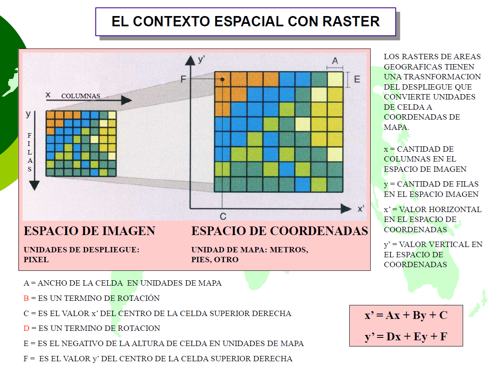
Para vincular una ubicación \((X_{píxel}, Y_{píxel})\) de la imagen con una coordenada real \((X_{real}, Y_{real})\), las librerías como rasterio utilizan una Transformación Afín 2D. Este tipo de transformación geométrica es lineal y preserva el paralelismo entre líneas, lo que permite mover (trasladar), escalar y rotar el raster para que encaje perfectamente sobre el mapa.
La matriz afín de 6 parámetros (excluyendo los técnicos \(g\), \(h\), \(i\)) mapea los píxeles a coordenadas reales usando las siguientes ecuaciones lineales generales:
\[X_{real} = c + X_{píxel} \times a + Y_{píxel} \times b\] \[Y_{real} = f + X_{píxel} \times d + Y_{píxel} \times e\]
Donde los coeficientes son:
Si no hay rotación, la fórmula se simplifica a la lógica lineal directa: \(Origen + (Indice \times Resolución)\).
Nota importante sobre la Resolución Vertical (\(e\)): Para resolver la contradicción entre las filas que bajan (imagen) y el norte que sube (coordenadas), el valor de resolución vertical \(e\) debe ser NEGATIVO. Esto asegura que a medida que avanzamos hacia abajo en las filas (\(Y_{píxel}\) aumenta), la coordenada geográfica Norte (\(Y_{real}\)) decrezca correctamente.
# Ejemplo matemático con los datos impresos anteriormente:
# f (Origen Y Norte): 5,960,000 m
# e (Resolución Y): -10 m/píxel
# Si bajamos 10 filas (Y_pixel = 10):
# Coordenada Y_real = 5,960,000 + (10 * -10)
# Y_real = 5,960,000 - 100 = 5,959,900 m (Nos movimos al Sur)| Operación | Python 🐍 | R 🔵 | Julia 🟣 |
|---|---|---|---|
| Validar existencia de archivo | os.path.exists(ruta) |
file.exists(ruta) |
isfile(ruta) |
| Cargar archivo raster | rioxarray.open_rasterio(ruta) |
rast(ruta) |
Raster(ruta) |
| Reproyección espacial | raster.rio.reproject("EPSG:9377") |
project(raster, "epsg:9377") |
resample(raster; crs=EPSG(9377)) |
| Crear directorios anidados | os.makedirs(ruta, exist_ok=True) |
dir.create(ruta, recursive=TRUE) |
mkpath(ruta) |
| Exportar / Escribir en disco | raster.rio.to_raster(ruta) |
writeRaster(raster, overwrite=TRUE) |
write(ruta, raster; force=true) |
| Consultar CRS | raster.rio.crs |
crs(raster) |
crs(raster) |
El álgebra de mapas permite evaluar operaciones aritméticas píxel a píxel a través de múltiples bandas u objetos raster. Para este ejercicio, calcularemos el Índice de Agua de Diferencia Normalizada (NDWI), el cual es altamente efectivo para aislar y delimitar cuerpos hídricos superficiales.
Fórmula espectral: \[NDWI = \frac{Green - NIR}{Green + NIR}\]
El Índice de Diferencia Normalizada de Agua (NDWI), propuesto originalmente por McFeeters (1996) (McFeeters, 1996), aprovecha el comportamiento físico de la luz al interactuar con distintas superficies. El agua absorbe casi por completo la radiación en el espectro del Infrarrojo Cercano (NIR), mientras que refleja la luz visible, especialmente en la banda verde. Por el contrario, la vegetación y el suelo seco reflejan el NIR de forma muy intensa.
Al aplicar esta ecuación, la diferencia entre bandas se normaliza, produciendo un nuevo raster continuo cuyos valores resultantes siempre oscilarán entre -1.0 y +1.0.
El análisis de este índice se basa en establecer un punto de corte (threshold) para separar el agua del fondo terrestre. La regla general de interpretación es la siguiente:
Ajuste del umbral en la práctica En los ejercicios SIG teóricos, el punto de corte estándar es el 0.0 (todo píxel \(>0\) es agua). Sin embargo, en imágenes satelitales reales que presentan nubosidad o relieve montañoso, los analistas suelen ajustar este umbral manualmente (por ejemplo, subiéndolo a 0.1 o 0.15) para eliminar el “ruido” que generan las sombras y aislar los ríos o lagos con mayor precisión cartográfica.
Utilizaremos la lectura nativa de archivos comprimidos para evitar cuellos de botella en el almacenamiento físico. Utilizando el Sistema de Archivos Virtuales de GDAL (/vsizip/), podemos leer una escena satelital Sentinel-2 directamente desde su archivo .zip original sin necesidad de descomprimirla.
Un producto Sentinel-2 es una estructura jerárquica gobernada por el archivo XML de metadatos (MTD_MSIL1C.xml). Este archivo no contiene los píxeles, sino que actúa como un índice lógico que organiza las bandas individuales en 4 grupos funcionales (Subdatasets):
Al invocar la ruta con el filtro específico:
SENTINEL2_L1C:/vsizip/.../MTD_MSIL1C.xml:10m:EPSG_32632
Estamos forzando al sistema a ignorar los grupos de 20m, 60m y el TCI, cargando únicamente el cubo de 4 bandas de 10 metros para garantizar la máxima precisión analítica.
Cuando trabajamos con el subdataset de 10m, el sistema nos entrega un arreglo de 4 capas con el siguiente orden interno (ver Tabla 19.1):
| Banda en el “Cubo” | Banda Sentinel-2 | Resolución | Longitud de Onda | Uso Principal |
|---|---|---|---|---|
| 1 | B04 (Red) | 10m | 665 nm | Absorción de clorofila |
| 2 | B03 (Green) | 10m | 560 nm | Vigor de vegetación y turbidez |
| 3 | B02 (Blue) | 10m | 490 nm | Mapeo de aguas y suelos |
| 4 | B08 (NIR) | 10m | 842 nm | Biomasa y salud foliar |
Nota sobre el TCI: Aunque el subdataset
:TCI:también contiene las bandas B04, B03 y B02, suele entregarse como un producto de 8 bits (valores de 0 a 255) ya estirado visualmente. Para el álgebra de mapas profesional (como el NDWI), siempre debemos usar el subdataset de:10m:, ya que conserva los valores de reflectancia originales de 16 bits.
A continuación, mediante R, construiremos la ruta de enlace a una imagen satelital empaquetada internamente en la librería starsdata y la exportaremos a un archivo de texto en la carpeta data/ para compartirla interoperablemente con Python y Julia.
# #| eval: false
library(starsdata) # Librería que contiene datasets espaciales de prueba
# -------------------------------------------------------------------------
# 1. LOCALIZACIÓN DEL ARCHIVO FÍSICO
# -------------------------------------------------------------------------
# Definimos la ruta relativa del archivo .zip dentro de la estructura del paquete
f <- "sentinel/S2A_MSIL1C_20180220T105051_N0206_R051_T32ULE_20180221T134037.zip"
# system.file() busca la ruta absoluta de ese archivo en nuestro disco duro
granule <- system.file(file = f, package = "starsdata")
# Extraemos solo el nombre base del archivo (sin la extensión .zip)
# Esto es clave porque el directorio interno .SAFE se llama exactamente igual
base_name <- strsplit(basename(granule), ".zip")[[1]]
# -------------------------------------------------------------------------
# 2. CONSTRUCCIÓN DE LA RUTA VIRTUAL (VSI) DE GDAL
# -------------------------------------------------------------------------
# Construimos una cadena de conexión especializada para GDAL:
# - SENTINEL2_L1C: Activa el driver específico de Sentinel-2
# - /vsizip/: Indica a GDAL que lea dentro del archivo comprimido sin extraerlo en disco
# - MTD_MSIL1C.xml: Archivo maestro que organiza las bandas
# - :10m:EPSG_32632: Filtramos estrictamente el subdataset de 10 metros
s2_path <- paste0("SENTINEL2_L1C:/vsizip/", granule, "/", base_name, ".SAFE/MTD_MSIL1C.xml:10m:EPSG_32632")
# -------------------------------------------------------------------------
# 3. PERSISTENCIA DE LA RUTA PARA INTEROPERABILIDAD
# -------------------------------------------------------------------------
# Creamos la carpeta 'data' si no existe en nuestro espacio de trabajo
if (!dir.exists("data")) {
dir.create("data")
}
# Guardamos la ruta virtual en un archivo de texto plano.
# Esto permite que Python y Julia puedan leer exactamente el mismo insumo
# sin tener que recalcular las rutas de los paquetes de R.
writeLines(s2_path, "data/s2_shared_path.txt")
cat("Ruta virtual de GDAL generada y almacenada en: data/s2_shared_path.txt\n")Ruta virtual de GDAL generada y almacenada en: data/s2_shared_path.txtUna vez materializada la ruta, los tres lenguajes la consumirán para ejecutar de forma enlazada el cálculo del NDWI y resguardar el resultado en la carpeta de procesamiento masivo (data_heavy/raster/). Es importante inspeccionar siempre los metadatos de las bandas; para este producto específico, el orden interno reportado por GDAL es: 1:Rojo(B4), 2:Verde(B3), 3:Azul(B2) y 4:NIR(B8).
En esta sección exploraremos las diversas estrategias y librerías para representar visualmente el NDWI. El objetivo es comprender la transición entre la matriz numérica cruda (regida por el plano cartesiano y los índices de memoria) y el objeto raster georreferenciado (regido por coordenadas reales y el Norte geográfico).
Se abordarán soluciones específicas para corregir errores comunes de orientación, tales como la transposición de ejes y la inversión vertical de las filas, garantizando que la representación visual coincida estrictamente con la realidad del terreno.
Gestión de metadatos: El perfil de salida (Profile)
En el contexto de la programación SIG con la librería rasterio, el perfil de salida (profile) es un diccionario de Python que consolida los metadatos técnicos necesarios para la instanciación de un nuevo archivo físico en el disco. Al realizar análisis espaciales (como el cálculo del NDWI), el nuevo archivo debe heredar o adaptar las propiedades del insumo original para garantizar su validez y alineación en softwares de escritorio como QGIS o ArcGIS.
Los componentes fundamentales que definen un perfil son:
driver: Especifica el formato de almacenamiento. El estándar de la industria es 'GTiff' (GeoTIFF).dtype: Define el tipo de dato de los píxeles. Se utiliza float32 para valores continuos (índices espectrales) o uint16 para valores de reflectancia cruda.nodata: Valor numérico (ej. -9999) que designa la ausencia de información, permitiendo que el software lo interprete como transparencia.width y height: Dimensiones de la matriz (columnas y filas). Deben coincidir estrictamente con el tamaño del arreglo de datos.count: Número de bandas. Si el insumo es multiespectral pero el resultado es un índice único, este valor debe actualizarse a 1.crs: Sistema de Referencia de Coordenadas (ej. EPSG:9377 para Colombia).transform: Matriz de transformación afín que vincula los índices de la matriz con coordenadas geográficas reales.El método .update()
Dada la complejidad de definir estos parámetros desde cero, el flujo de trabajo estándar consiste en extraer el perfil del archivo fuente y modificar exclusivamente los atributos que cambian mediante el método .update():
# 1. Cargar la imagen a la variable src
# Usando por ejemplo: with rasterio.open(s2_path) as src:
# 2. Extraer metadatos del original
perfil = src.profile
# 3. Adaptar parámetros para el nuevo índice
perfil.update(
count=1,
dtype='float32',
nodata=-9999
)Este procedimiento garantiza la coincidencia espacial perfecta: el raster resultante mantendrá la misma ubicación, resolución y proyección que el insumo original, facilitando su integración en sistemas de información geográfica.
# #| eval: false
#| label: python_ndwi_bad_codigo
#| fig-align: center
#| out-width: "80%"
#| eval: false
# -------------------------------
# IMPORTACIÓN DE LIBRERÍAS
# -------------------------------
import os # Manejo de rutas y sistema de archivos
import rasterio # Lectura/escritura de datos raster geoespaciales
from rasterio.windows import Window # Permite trabajar con subregiones (ventanas) del raster
import xarray as xr # Manejo avanzado de arrays etiquetados (útil para visualización)
import numpy as np # Operaciones numéricas eficientes
import matplotlib.pyplot as plt # Visualización gráfica
# -------------------------------
# CONFIGURACIÓN DE RUTAS
# -------------------------------
# Archivo .txt que contiene la ruta al raster Sentinel-2 original
ruta_txt = "data/s2_shared_path.txt"
# Ruta donde se guardará el resultado NDWI optimizado
ruta_salida = "data_heavy/raster/ndwi_sentinel_optimizado_python_1.tif"
# Verificamos que el archivo con la ruta exista
if not os.path.exists(ruta_txt):
print(f"ERROR: Insumo ausente en {ruta_txt}")
else:
try:
# -------------------------------
# LECTURA DE LA RUTA DEL RASTER
# -------------------------------
with open(ruta_txt, "r") as f:
# Leemos la ruta almacenada en el .txt y eliminamos espacios extra
s2_path = f.read().strip()
# -------------------------------
# APERTURA DEL RASTER ORIGINAL
# -------------------------------
with rasterio.open(s2_path) as src:
# --- OPTIMIZACIÓN 1: USO DE VENTANA ---
# En lugar de procesar toda la imagen (~11000 x 11000 px),
# trabajamos solo con una subregión (ventana).
# Parámetros de la ventana:
# col_off: desplazamiento horizontal (columnas) desde la esquina superior izquierda
# row_off: desplazamiento vertical (filas)
# width: ancho del recorte en píxeles
# height: alto del recorte en píxeles
# Imagen completa (10980 px de ancho aprox)
# |--------------------|---------------------------|
# 0 9980 10980
# ↑ ↑
# col_off col_off + width
ventana = Window(col_off=9980, row_off=4000, width=1000, height=2500)
# Lectura selectiva de bandas:
# Banda 2 = Green (verde)
# Banda 4 = NIR (infrarrojo cercano)
# Convertimos a float32 para reducir uso de memoria (vs float64)
# Nota importante : Cuando trabajas con la librería rasterio (y casi cualquier
# software basado en GDAL): las bandas de un archivo raster se
# cuentan empezando desde 1 (independientemente de la base 0 de Python)
green_arr = src.read(2, window=ventana).astype(np.float32)
nir_arr = src.read(4, window=ventana).astype(np.float32)
# Guardamos el perfil original (metadatos del raster)
perfil_salida = src.profile
# Calculamos la nueva transformada espacial para la ventana
# Esto asegura que el recorte conserve su georreferenciación correcta
# El objeto nueva_transformada es una Matriz de Transformación Afín:
# (col, row) → (x, y)
# píxel → coordenada real
# Es el "puente" matemático que le dice al ordenador cómo convertir
# un número de fila y columna (píxel) en una coordenada real
# en el mapa (ej: metros)
# Cuando usas src.window_transform(ventana), rasterio calcula una
# nueva matriz que desplaza el origen (la esquina superior izquierda)
# desde el borde de la imagen original hasta el borde de tu recorte
nueva_transformada = src.window_transform(ventana)
# nueva_transformada contiene 6 coeficientes principales que definen
# la posición y escala del raster:
# a: scale x - ancho del píxel (ej. 10 metros).
# b: rotation x - rotación de filas (normalmente 0).
# c: x origin - coordenada Este (X) de la esquina superior izquierda
# del recorte.
# d: rotation y - rotación de columnas (normalmente 0).
# e: scale y - alto del píxel (suele ser negativo, ej. -10,
# porque las coordenadas del mapa suben y las filas del raster
# bajan)
# f: y origin - coordenada Norte (Y) de la esquina superior izquierda
# del recorte.
# g, h, i: estándar de matrices 3x3
# Imprimimos el contenido
print(f"Contenido nueva_transformada: {nueva_transformada}")
print(f"Contenido nueva_transformada como tupla: {tuple(nueva_transformada)}")
# Los 6 parámetros principales de la transformación afín
print(f"a - Resolución horizontal (ancho píxel): {nueva_transformada.a}")
print(f"b - Rotación/Cizallamiento en X: {nueva_transformada.b}")
print(f"c - Origen Este (X) del recorte: {nueva_transformada.c}")
print(f"d - Rotación/Cizallamiento en Y: {nueva_transformada.d}")
print(f"e - Resolución vertical (alto píxel): {nueva_transformada.e}")
print(f"f - Origen Norte (Y) del recorte: {nueva_transformada.f}")
# Los 3 parámetros de la tercera fila (estándar de matrices 3x3)
# Los parámetros g, h, i son componentes técnicos necesarios para que
# la matriz sea cuadrada (3 x 3) y funcione bajo el concepto de
# coordenadas homogéneas
# En procesamiento de mapas 2D (como este), sus valores son fijos:
# g y h (Perspectiva): Controlan la inclinación en un espacio 3D (perspectiva).
# Como los rasters son planos, siempre son 0.0.
print(f"g - Parámetro de perspectiva g: {nueva_transformada.g}")
print(f"h - Parámetro de perspectiva h: {nueva_transformada.h}")
# i (Factor de escala): Es un normalizador matemático para que la
# matriz sea operativa. Siempre es 1.0.
print(f"i - Factor de escala homogénea i: {nueva_transformada.i}")
# -------------------------------
# CÁLCULO DEL NDWI
# -------------------------------
# Fórmula del NDWI (Normalized Difference Water Index):
# NDWI = (Green - NIR) / (Green + NIR)
denominador = green_arr + nir_arr
# Evitamos divisiones por cero:
# - Si el denominador es 0 → asignamos NaN
# - Si es válido → aplicamos la fórmula
# Nota 1: ndwi_np no sabe sobre coordenadas
# las columnas inician en 0 y continúan ascendiendo
# las filas inician en 0 y continúan ascendiendo
# Nota 2: El resultado es una matriz 'cruda'. En esta etapa,
# el píxel [0,0] es simplemente el primer dato de la memoria,
# sin ubicación en el mundo real"
ndwi_np = np.where(
denominador > 0,
(green_arr - nir_arr) / denominador,
np.nan
)
# -------------------------------
# OPTIMIZACIÓN 2: ESCRITURA EFICIENTE
# -------------------------------
# Creamos la carpeta de salida si no existe
os.makedirs(os.path.dirname(ruta_salida), exist_ok=True)
# Actualizamos el perfil del raster de salida
perfil_salida.update(
dtype=rasterio.float32, # Tipo de dato (menor peso)
count=1, # Solo una banda (NDWI)
driver='GTiff', # Formato GeoTIFF
nodata=-9999, # Valor para datos faltantes
width=ventana.width, # Nuevo ancho (recorte)
height=ventana.height, # Nuevo alto (recorte)
transform=nueva_transformada, # Nueva georreferenciación
# Compresión LZW:
# Reduce significativamente el tamaño del archivo sin perder información
compress='lzw',
# tiled=True:
# Mejora el rendimiento de lectura en SIG (ej. QGIS)
tiled=True
)
# -------------------------------
# ESCRITURA DEL RASTER NDWI
# -------------------------------
with rasterio.open(ruta_salida, 'w', **perfil_salida) as dst:
# Reemplazamos NaN por el valor nodata definido (-9999)
out_data = np.nan_to_num(ndwi_np, nan=-9999).astype(np.float32)
# Escribimos la banda NDWI en el archivo de salida
# Nota: A pesar que la visualización en Python es invertida (cols)
# el archivo exportado si está correctamente georeferenciado
# porque usa nueva_transformada en el perfil de salida perfil_salida
dst.write(out_data, 1)
print(f"Proceso optimizado exitoso. Archivo ligero guardado en: {ruta_salida}")
# -------------------------------
# VISUALIZACIÓN CARTOGRÁFICA
# -------------------------------
# 2. Creamos el DataArray con COORDENADAS REALES
ndwi_xr = xr.DataArray(
ndwi_np,
dims=("y", "x")
)
# Imprimir los valores del eje X
print("Valores de X (Este):")
print(ndwi_xr.x.values[:5])
#print(ndwi_xr.x.values)
# Imprimir los valores del eje Y
print("\nValores de Y (Norte):")
print(ndwi_xr.y.values[:5])
#print(ndwi_xr.y.values)
print(f"Rango de X: desde {ndwi_xr.x.min().values} hasta {ndwi_xr.x.max().values}")
print(f"Rango de Y: desde {ndwi_xr.y.min().values} hasta {ndwi_xr.y.max().values}")
print(f"Cantidad de píxeles: {ndwi_xr.x.size} en X, {ndwi_xr.y.size} en Y")
# 3. Graficamos
# Creamos figura y eje
fig, ax = plt.subplots(figsize=(10, 8))
# Visualización del NDWI:
# cmap="GnBu" → tonos verde-azul (agua en azul intenso)
# vmin/vmax → controlan el rango de visualización
ndwi_xr.plot(ax=ax, cmap="GnBu", vmin=-0.5, vmax=0.5)
# Título del gráfico
ax.set_title("NDWI SIN Georreferenciar")
ax.set_xlabel("Columnas (1000)")
ax.set_ylabel("Filas (2500)")
# Esto asegura que 1 unidad en X sea igual a 1 unidad en Y (evita deformación)
plt.axis("equal")
# -------------------------------------------------------------------------
# NOTA SOBRE VISUALIZACIÓN: NumPy (Cartesiano) vs. Xarray (Geográfico)
# -------------------------------------------------------------------------
# Sin coordenadas geográficas, Matplotlib usa el plano cartesiano estándar:
# el origen (0,0) se ubica ABAJO a la izquierda y el eje Y aumenta hacia arriba.
# Esto hace que el raster se vea "invertido", pues la fila 0 (el Norte real)
# termina dibujada en la base del gráfico.
#
# Al usar un array georeferenciado (Xarray con coords), el sistema reconoce
# la naturaleza del raster: el origen (índice 0,0) está ARRIBA a la izquierda.
# Gracias a la resolución vertical negativa, las coordenadas Norte disminuyen
# conforme bajamos en las filas, alineando el mapa correctamente con el mundo real.
# -------------------------------------------------------------------------
# Conclusión: este gráfico está invertido (mal) en los valores de las filas
plt.show()
except Exception as e:
# Captura cualquier error inesperado en el flujo
print(f"Error crítico en el flujo de trabajo: {e}")Contenido nueva_transformada: | 10.00, 0.00, 399800.00|
| 0.00,-10.00, 5960000.00|
| 0.00, 0.00, 1.00|
Contenido nueva_transformada como tupla: (10.0, 0.0, 399800.0, 0.0, -10.0, 5960000.0, 0.0, 0.0, 1.0)
a - Resolución horizontal (ancho píxel): 10.0
b - Rotación/Cizallamiento en X: 0.0
c - Origen Este (X) del recorte: 399800.0
d - Rotación/Cizallamiento en Y: 0.0
e - Resolución vertical (alto píxel): -10.0
f - Origen Norte (Y) del recorte: 5960000.0
g - Parámetro de perspectiva g: 0.0
h - Parámetro de perspectiva h: 0.0
i - Factor de escala homogénea i: 1.0
<string>:118: RuntimeWarning: invalid value encountered in divide
Proceso optimizado exitoso. Archivo ligero guardado en: data_heavy/raster/ndwi_sentinel_optimizado_python_1.tif
Valores de X (Este):
[0 1 2 3 4]
Valores de Y (Norte):
[0 1 2 3 4]
Rango de X: desde 0 hasta 999
Rango de Y: desde 0 hasta 2499
Cantidad de píxeles: 1000 en X, 2500 en Y
<matplotlib.collections.QuadMesh object at 0x7333ee87b350>
Text(0.5, 1.0, 'NDWI SIN Georreferenciar')
Text(0.5, 0, 'Columnas (1000)')
Text(0, 0.5, 'Filas (2500)')
(np.float64(-0.5), np.float64(999.5), np.float64(-0.5), np.float64(2499.5))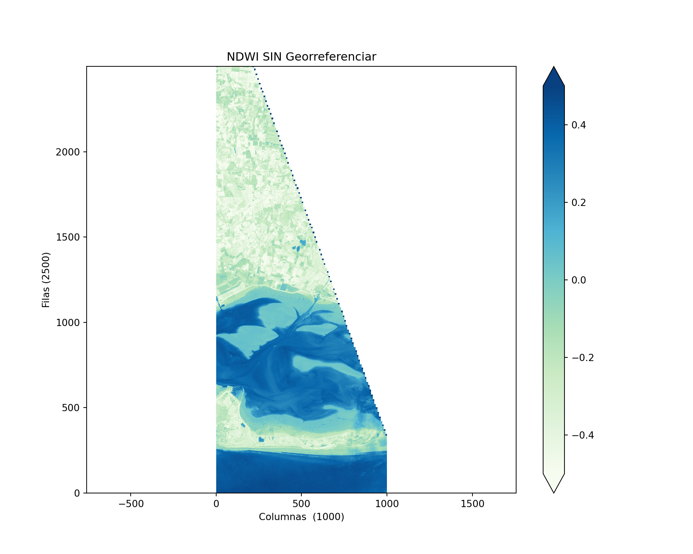
# #| eval: false
# -------------------------------
# IMPORTACIÓN DE LIBRERÍAS
# -------------------------------
import os # Manejo de rutas y sistema de archivos
import rasterio # Lectura/escritura de datos raster geoespaciales
from rasterio.windows import Window # Permite trabajar con subregiones (ventanas) del raster
import xarray as xr # Manejo avanzado de arrays etiquetados (útil para visualización)
import numpy as np # Operaciones numéricas eficientes
import matplotlib.pyplot as plt # Visualización gráfica
# -------------------------------
# CONFIGURACIÓN DE RUTAS
# -------------------------------
# Archivo .txt que contiene la ruta al raster Sentinel-2 original
ruta_txt = "data/s2_shared_path.txt"
# Ruta donde se guardará el resultado NDWI optimizado
ruta_salida = "data_heavy/raster/ndwi_sentinel_optimizado_python.tif"
# Verificamos que el archivo con la ruta exista
if not os.path.exists(ruta_txt):
print(f"ERROR: Insumo ausente en {ruta_txt}")
else:
try:
# -------------------------------
# LECTURA DE LA RUTA DEL RASTER
# -------------------------------
with open(ruta_txt, "r") as f:
# Leemos la ruta almacenada en el .txt y eliminamos espacios extra
s2_path = f.read().strip()
# -------------------------------
# APERTURA DEL RASTER ORIGINAL
# -------------------------------
with rasterio.open(s2_path) as src:
# --- OPTIMIZACIÓN 1: USO DE VENTANA ---
# En lugar de procesar toda la imagen (~11000 x 11000 px),
# trabajamos solo con una subregión (ventana).
# Parámetros de la ventana:
# col_off: desplazamiento horizontal (columnas) desde la esquina superior izquierda
# row_off: desplazamiento vertical (filas)
# width: ancho del recorte en píxeles
# height: alto del recorte en píxeles
# Imagen completa (10980 px de ancho aprox)
# |--------------------|---------------------------|
# 0 9980 10980
# ↑ ↑
# col_off col_off + width
ventana = Window(col_off=9980, row_off=4000, width=1000, height=2500)
# Lectura selectiva de bandas:
# Banda 2 = Green (verde)
# Banda 4 = NIR (infrarrojo cercano)
# Convertimos a float32 para reducir uso de memoria (vs float64)
# Nota importante : Cuando trabajas con la librería rasterio (y casi cualquier
# software basado en GDAL): las bandas de un archivo raster se
# cuentan empezando desde 1 (independientemente de la base 0 de Python)
green_arr = src.read(2, window=ventana).astype(np.float32)
nir_arr = src.read(4, window=ventana).astype(np.float32)
# Guardamos el perfil original (metadatos del raster)
perfil_salida = src.profile
# Calculamos la nueva transformada espacial para la ventana
# Esto asegura que el recorte conserve su georreferenciación correcta
# El objeto nueva_transformada es una Matriz de Transformación Afín:
# (col, row) → (x, y)
# píxel → coordenada real
# Es el "puente" matemático que le dice al ordenador cómo convertir
# un número de fila y columna (píxel) en una coordenada real
# en el mapa (ej: metros)
# Cuando usas src.window_transform(ventana), rasterio calcula una
# nueva matriz que desplaza el origen (la esquina superior izquierda)
# desde el borde de la imagen original hasta el borde de tu recorte
nueva_transformada = src.window_transform(ventana)
# nueva_transformada contiene 6 coeficientes principales que definen
# la posición y escala del raster:
# a: scale x - ancho del píxel (ej. 10 metros).
# b: rotation x - rotación de filas (normalmente 0).
# c: x origin - coordenada Este (X) de la esquina superior izquierda
# del recorte.
# d: rotation y - rotación de columnas (normalmente 0).
# e: scale y - alto del píxel (suele ser negativo, ej. -10,
# porque las coordenadas del mapa suben y las filas del raster
# bajan)
# f: y origin - coordenada Norte (Y) de la esquina superior izquierda
# del recorte.
# g, h, i: estándar de matrices 3x3
# Imprimimos el contenido
print(f"Contenido nueva_transformada: {nueva_transformada}")
print(f"Contenido nueva_transformada como tupla: {tuple(nueva_transformada)}")
# Los 6 parámetros principales de la transformación afín
print(f"a - Resolución horizontal (ancho píxel): {nueva_transformada.a}")
print(f"b - Rotación/Cizallamiento en X: {nueva_transformada.b}")
print(f"c - Origen Este (X) del recorte: {nueva_transformada.c}")
print(f"d - Rotación/Cizallamiento en Y: {nueva_transformada.d}")
print(f"e - Resolución vertical (alto píxel): {nueva_transformada.e}")
print(f"f - Origen Norte (Y) del recorte: {nueva_transformada.f}")
# Los 3 parámetros de la tercera fila (estándar de matrices 3x3)
# Los parámetros g, h, i son componentes técnicos necesarios para que
# la matriz sea cuadrada (3 x 3) y funcione bajo el concepto de
# coordenadas homogéneas
# En procesamiento de mapas 2D (como este), sus valores son fijos:
# g y h (Perspectiva): Controlan la inclinación en un espacio 3D (perspectiva).
# Como los rasters son planos, siempre son 0.0.
print(f"g - Parámetro de perspectiva g: {nueva_transformada.g}")
print(f"h - Parámetro de perspectiva h: {nueva_transformada.h}")
# i (Factor de escala): Es un normalizador matemático para que la
# matriz sea operativa. Siempre es 1.0.
print(f"i - Factor de escala homogénea i: {nueva_transformada.i}")
# -------------------------------
# CÁLCULO DEL NDWI (CON MANEJO DE ADVERTENCIAS)
# -------------------------------
# Fórmula del NDWI (Normalized Difference Water Index):
# NDWI = (Green - NIR) / (Green + NIR)
denominador = green_arr + nir_arr
# Usamos np.errstate para ignorar advertencias de división por cero localmente
with np.errstate(divide='ignore', invalid='ignore'):
# - Si el denominador es 0 → asignamos NaN
# - Si es válido → aplicamos la fórmula
ndwi_np = np.where(
denominador > 0,
(green_arr - nir_arr) / denominador,
np.nan
)
# -------------------------------
# OPTIMIZACIÓN 2: ESCRITURA EFICIENTE
# -------------------------------
# Creamos la carpeta de salida si no existe
os.makedirs(os.path.dirname(ruta_salida), exist_ok=True)
# Actualizamos el perfil del raster de salida
perfil_salida.update(
dtype=rasterio.float32, # Tipo de dato (menor peso)
count=1, # Solo una banda (NDWI)
driver='GTiff', # Formato GeoTIFF
nodata=-9999, # Valor para datos faltantes
width=ventana.width, # Nuevo ancho (recorte)
height=ventana.height, # Nuevo alto (recorte)
transform=nueva_transformada, # Nueva georreferenciación
# Compresión LZW:
# Reduce significativamente el tamaño del archivo sin perder información
compress='lzw',
# tiled=True:
# Mejora el rendimiento de lectura en SIG (ej. QGIS)
tiled=True
)
# -------------------------------
# ESCRITURA DEL RASTER NDWI
# -------------------------------
with rasterio.open(ruta_salida, 'w', **perfil_salida) as dst:
# Reemplazamos NaN por el valor nodata definido (-9999)
out_data = np.nan_to_num(ndwi_np, nan=-9999).astype(np.float32)
# Escribimos la banda NDWI en el archivo de salida
# Nota: el archivo exportado si está correctamente georeferenciado
# porque usa nueva_transformada en el perfil de salida
dst.write(out_data, 1)
print(f"Proceso optimizado exitoso. Archivo ligero guardado en: {ruta_salida}")
# -------------------------------
# VISUALIZACIÓN CARTOGRÁFICA
# -------------------------------
rows = np.arange(ventana.height)
print(f"rows: {rows[:5]}") # primeros 5 valores de numpy.ndarray
# Esto genera rows: [0, 1, 2, ..., 2499]
# Son posiciones internas del raster (píxeles)
# Aún NO son coordenadas proyectadas
cols = np.arange(ventana.width)
print(f"cols: {cols[:5]}") # primeros 5 valores de numpy.ndarray
# Esto genera cols: [0, 1, 2, ..., 2499]
# Son posiciones internas del raster (píxeles)
# Aún NO son coordenadas proyectadas
# Usamos la nueva_transformada para obtener los metros exactos
# nueva_transformada es una fórmula, y de ella extraeremos las coordenadas.
# nueva_transformada contiene la regla matemática para calcularlas
# nueva_transformada es como una receta (la fórmula) pero no el plato servido
# (las coordenadas)
# La función 'transform * (col, row)' nos da las coordenadas (x, y)
# Cuando escribes nueva_transformada * (cols, rows), estás ejecutando la fórmula.
# Estás diciendo: "Toma estos índices (0, 1, 2...) y pásalos por la matriz para
# que me digas cuántos metros corresponden en la realidad
# eastings, northings = nueva_transformada * (cols, rows)
# print(f"eastings, northings: {eastings, northings}")
# PERO: como el número de columnas (1000) es diferente al número de filas (2500),
# calculamos las coordenadas para cada eje de forma independiente.
# Para el eje X (Este): Usamos el origen 'c' y la resolución 'a'
# Coordenada X = Origen_X + (Índice_Columna * Resolución_X)
eastings = nueva_transformada.c + (np.arange(ventana.width) * nueva_transformada.a)
# Para el eje Y (Norte): Usamos el origen 'f' y la resolución 'e'
# Coordenada Y = Origen_Y + (Índice_Fila * Resolución_Y)
northings = nueva_transformada.f + (np.arange(ventana.height) * nueva_transformada.e)
# Creamos el DataArray con las coordenadas reales
ndwi_xr = xr.DataArray(
ndwi_np,
dims=("y", "x"),
coords={
"x": eastings,
"y": northings
}
)
# Ahora el print mostrará coordenadas reales
print(f"Esquina superior izquierda (X, Y): {ndwi_xr.x[0].values}, {ndwi_xr.y[0].values}")
print(f"Resolución del eje X: {ndwi_xr.x[1].values - ndwi_xr.x[0].values} metros")
# 3. Graficamos
# Creamos figura y eje
fig, ax = plt.subplots(figsize=(10, 8))
# Al tener coordenadas reales, el plot respetará la orientación geográfica
# Visualización del NDWI:
# cmap="GnBu" → tonos verde-azul (agua en azul intenso)
# vmin/vmax → controlan el rango de visualización
ndwi_xr.plot(ax=ax, cmap="GnBu", vmin=-0.5, vmax=0.5)
# Título del gráfico
ax.set_title("NDWI Georreferenciado")
ax.set_xlabel("Este (Metros)")
ax.set_ylabel("Norte (Metros)")
# Esto asegura que 1 metro en X sea igual a 1 metro en Y (evita deformación)
plt.axis("equal")
# Mostrar resultado
plt.show()
except Exception as e:
# Captura cualquier error inesperado en el flujo
print(f"Error crítico en el flujo de trabajo: {e}")Contenido nueva_transformada: | 10.00, 0.00, 399800.00|
| 0.00,-10.00, 5960000.00|
| 0.00, 0.00, 1.00|
Contenido nueva_transformada como tupla: (10.0, 0.0, 399800.0, 0.0, -10.0, 5960000.0, 0.0, 0.0, 1.0)
a - Resolución horizontal (ancho píxel): 10.0
b - Rotación/Cizallamiento en X: 0.0
c - Origen Este (X) del recorte: 399800.0
d - Rotación/Cizallamiento en Y: 0.0
e - Resolución vertical (alto píxel): -10.0
f - Origen Norte (Y) del recorte: 5960000.0
g - Parámetro de perspectiva g: 0.0
h - Parámetro de perspectiva h: 0.0
i - Factor de escala homogénea i: 1.0
Proceso optimizado exitoso. Archivo ligero guardado en: data_heavy/raster/ndwi_sentinel_optimizado_python.tif
rows: [0 1 2 3 4]
cols: [0 1 2 3 4]
Esquina superior izquierda (X, Y): 399800.0, 5960000.0
Resolución del eje X: 10.0 metros
<matplotlib.collections.QuadMesh object at 0x7333ee89e570>
Text(0.5, 1.0, 'NDWI Georreferenciado')
Text(0.5, 0, 'Este (Metros)')
Text(0, 0.5, 'Norte (Metros)')
(np.float64(399795.0), np.float64(409795.0), np.float64(5935005.0), np.float64(5960005.0))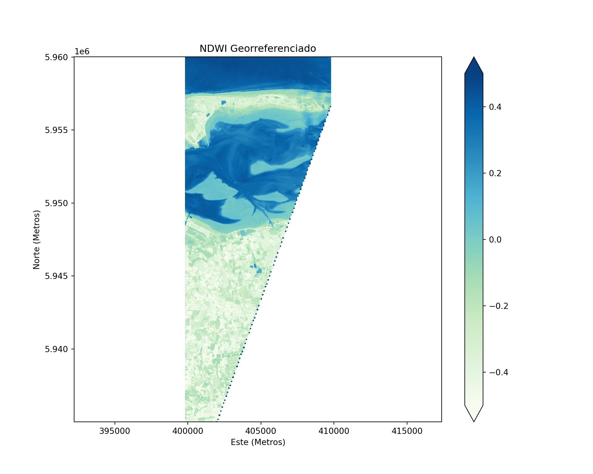
# #| eval: false
# -------------------------------
# IMPORTACIÓN DE LIBRERÍAS
# -------------------------------
# terra es el paquete moderno y estándar para datos espaciales raster en R
# Reemplaza y unifica las funciones de rasterio, xarray y numpy en Python
library(terra)
library(grDevices) # Para las paletas de colores
# -------------------------------
# CONFIGURACIÓN DE RUTAS
# -------------------------------
# Archivo .txt que contiene la ruta al raster Sentinel-2 original
ruta_txt <- "data/s2_shared_path.txt"
# Ruta donde se guardará el resultado NDWI optimizado
ruta_salida <- "data_heavy/raster/ndwi_sentinel_optimizado_r_1.tif"
# Verificamos que el archivo con la ruta exista
if (!file.exists(ruta_txt)) {
cat("ERROR: Insumo ausente en", ruta_txt, "\n")
} else {
tryCatch({
# -------------------------------
# LECTURA DE LA RUTA DEL RASTER
# -------------------------------
# Leemos la ruta almacenada en el .txt y eliminamos espacios extra
s2_path <- trimws(readLines(ruta_txt, warn = FALSE))
# -------------------------------
# APERTURA DEL RASTER ORIGINAL
# -------------------------------
src <- rast(s2_path)
# --- OPTIMIZACIÓN 1: USO DE VENTANA ---
# En lugar de procesar toda la imagen (~10980 x 10980 px),
# trabajamos solo con una subregión (ventana).
# Parámetros de la ventana:
# A diferencia de Python (base 0), los índices en R empiezan en 1.
# Python: col_off=9980, width=1000 -> columnas 9980 a 10980
# R: inician en 9981 hasta 10980
# Python: row_off=4000, height=2500 -> filas 4000 a 6500
# R: inician en 4001 hasta 6500
r_start <- 4001
r_end <- 6500
c_start <- 9981
c_end <- 10980
# Creamos un Extent (caja delimitadora)
ventana_row_cols <- ext(r_start, r_end, c_start, c_end)
cat("Ventana en filas y columnas:", as.character(ventana_row_cols), "\n")
# Para extraer coordenadas en terra:
# primero extraemos el recorte y luego obtenemos
# su extensión
ventana_ext <- ext(src[r_start:r_end, c_start:c_end, drop=FALSE])
cat("Ventana en coordenadas X, Y:", as.character(ventana_ext), "\n")
# ext(src) devuelve la extensión de toda la imagen
# crop() realiza la lectura selectiva: solo carga este fragmento en memoria RAM
# Nota: el crop se hace sobre las 4 bandas
src_crop <- crop(src, ventana_ext)
# Lectura selectiva de bandas:
# Banda 2 = Green (verde)
# Banda 4 = NIR (infrarrojo cercano)
# Nota: Tanto en R como en el estándar GDAL, las bandas empiezan en 1.
green_band <- src_crop[[2]]
nir_band <- src_crop[[4]]
# Para emular el comportamiento de NumPy y ver el error cartesiano,
# convertimos los objetos geográficos a matrices numéricas "crudas"
green_mat <- as.matrix(green_band, wide=TRUE)
nir_mat <- as.matrix(nir_band, wide=TRUE)
# En R (terra), la Matriz de Transformación Afín se maneja internamente
# a través de la Extensión (Bounding Box) y la Resolución.
# Extraemos sus equivalentes matemáticos (a, b, c, d, e, f):
res_x <- res(src_crop)[1] # a: ancho del píxel
res_y <- -res(src_crop)[2] # e: alto del píxel (negativo porque filas bajan)
origen_x <- ext(src_crop)$xmin # c: coordenada Este (X) origen
origen_y <- ext(src_crop)$ymax # f: coordenada Norte (Y) origen
cat("Transformación Afín Equivalente en R:\n")
cat("a - Resolución horizontal (ancho píxel):", res_x, "\n")
cat("c - Origen Este (X) del recorte:", origen_x, "\n")
cat("e - Resolución vertical (alto píxel):", res_y, "\n")
cat("f - Origen Norte (Y) del recorte:", origen_y, "\n\n")
# -------------------------------
# CÁLCULO DEL NDWI
# -------------------------------
# Fórmula del NDWI: (Green - NIR) / (Green + NIR)
denominador <- green_mat + nir_mat
# ifelse maneja la división y evita errores matemáticos asignando NA (Not Available)
# Nota 1: ndwi_mat no sabe sobre coordenadas, es una simple cuadrícula matemática
# Nota 2: El resultado es una matriz 'cruda'. En esta etapa,
# el píxel [1,1] es simplemente el primer dato de la memoria.
ndwi_mat <- ifelse(denominador > 0, (green_mat - nir_mat) / denominador, NA)
# -------------------------------
# OPTIMIZACIÓN 2: ESCRITURA EFICIENTE
# -------------------------------
dir.create(dirname(ruta_salida), recursive = TRUE, showWarnings = FALSE)
# Para guardar, primero debemos devolverle sus coordenadas a la matriz
# Convirtiéndola de nuevo en un SpatRaster
ndwi_rast <- rast(ndwi_mat, extent=ventana_ext, crs=crs(src_crop))
# Escritura física con parámetros optimizados
writeRaster(ndwi_rast, ruta_salida,
datatype = "FLT4S", # FLT4S = Float32 (menor peso)
NAflag = -9999, # Valor para datos faltantes
gdal = c("COMPRESS=LZW", "TILED=YES"), # Compresión
overwrite = TRUE)
cat("Proceso optimizado exitoso. Archivo ligero guardado en:", ruta_salida, "\n")
# -------------------------------
# VISUALIZACIÓN CARTOGRÁFICA (ERRADA)
# -------------------------------
cat("Valores de X (Índices de Columnas):\n")
print(head(1:ncol(ndwi_mat)))
cat("Valores de Y (Índices de Filas):\n")
print(head(1:nrow(ndwi_mat)))
cat("Cantidad de píxeles:", ncol(ndwi_mat), "en X,", nrow(ndwi_mat), "en Y\n")
# 3. Graficamos la matriz cruda
# En R, la función image() asume un plano cartesiano. Dibuja el índice 1,1
# en la esquina inferior izquierda.
# Transponemos (t) la matriz para que coincidan las dimensiones.
# Conclusión: Gráfico invertido (mal)
image(1:ncol(ndwi_mat), 1:nrow(ndwi_mat), t(ndwi_mat),
col = hcl.colors(100, "GnBu"),
main = "NDWI SIN Georreferenciar - Invertido",
xlab = "Columnas (1000)",
ylab = "Filas (2500)",
asp = 1) # asp = 1 equivale al plt.axis("equal") de Python
# 4. Explicación del ploteo con image
# y librerías alternativas
# --------------------------------------------------
# ¿Por qué usamos t(ndwi_mat) en la función image()?
# --------------------------------------------------
# A) ¿Por qué no se puede hacer simplemente esto?
# image(1:ncol(ndwi_mat), 1:nrow(ndwi_mat), ndwi_mat)
# image(1:1000, 1:2500, ndwi_mat)
#
# El problema radica en cómo R base dibuja gráficos
# cartesianos frente a cómo se estructuran las matrices.
# Nuestra matriz tiene [2500 filas, 1000 columnas].
# Sin embargo, la función image(x, y, z) exige que
# - 1ra dimensión de 'z' coincida con 'x' (ancho/columnas)
# - 2da dimension de 'z' coincida con 'y' (alto/filas)
#
dim(ndwi_mat)
# [1] 2500 1000
#
# Si ejecutamos image(1:1000, 1:2500, ndwi_mat), R lanzará
# un error porque intentará forzar la primera dimensión de
# la matriz (2500) en el eje X (1000).
# La solución es transponer.
dim(t(ndwi_mat))
# [1] 1000 2500
#
# Al ejecutar image(1:1000, 1:2500, t(ndwi_mat)),
# invertimos la matriz a [1000, 2500]. Así las dimensiones
# empatan perfectamente con los ejes y, además,
# evitamos que la imagen aparezca rotada 90 grados.
#
# B) ¿Esto ocurre con otras librerías espaciales?
# No. Esto solo ocurre al graficar matrices numéricas puras
# con la función base image().
# Si usamos objetos espaciales formales, paquetes orientados
# a SIG como 'terra' o 'stars' detectan automáticamente que
# son mapas y realizan los ajustes geométricos internamente,
# por lo que nunca tendrás que transponer.
# Pero si usas matrices puras deberás aplicar la transpuesta.
# Ejemplos modernos donde NO es necesario transponer:
#
# Con terra y r base
# Nota: Usamos el objeto ndwi_rast en lugar de ndwi_mat
# ndwi_rast <- rast(ndwi_mat, extent=ventana_ext, crs=crs(src_crop))
# # Conclusión: Gráfico correcto (no usamos la matriz cruda)
plot(ndwi_rast, col = hcl.colors(100, "GnBu"), main = "Plot correcto con terra")
# Con terra y ggplot2
# ggplot2 + tidyterra (la opción más directa para objetos de terra)
# remotes::install_github("dieghernan/tidyterra")
#library(tidyterra)
#ggplot() +
# geom_spatraster(data = ndwi_rast) +
# scale_fill_whitebox_c(palette = "gn_bu") +
# labs(title = "Plot con ggplot2 + tidyterra")
# Con stars y r base
library(stars)
ndwi_stars <- st_as_stars(ndwi_rast)
# Conclusión: Gráfico correcto (no usamos la matriz cruda)
plot(ndwi_stars, col = hcl.colors(100, "GnBu"), main = "Plot correcto con stars")
# Con stars y ggplot2 (usando geom_stars)
library(ggplot2)
# Conclusión: Gráfico correcto (no usamos la matriz cruda)
ggplot() +
geom_stars(data = ndwi_stars) +
scale_fill_gradientn(colors = hcl.colors(100, "GnBu")) +
coord_equal() +
labs(title = "Plot con ggplot2 + stars")
#Con ggplot2 básico (convirtiendo el raster a un data.frame de puntos XY)
ndwi_df <- as.data.frame(ndwi_rast, xy = TRUE)
# Conclusión: Gráfico correcto (no usamos la matriz cruda)
ggplot(ndwi_df, aes(x = x, y = y, fill = lyr.1)) +
geom_raster() +
scale_fill_gradientn(colors = hcl.colors(100, "GnBu")) +
coord_equal() +
labs(title = "Plot correcto ggplot2 (data.frame XY)")
# Ejemplos donde SI es necesario transponer (uso de matriz base):
# -------------------------------------------------------------------------
# CREACIÓN DE UN OBJETO STARS DESDE UNA MATRIZ (ndwi_mat)
# -------------------------------------------------------------------------
# A. Convertimos la matriz a stars.
# Importante: Usamos t() porque stars espera [x, y] y nuestra matriz es [y, x]
ndwi_stars <- st_as_stars(t(ndwi_mat))
# 2. Asignamos las dimensiones geográficas (Transformación Afín)
# offset: Es el punto de inicio (c y f de la matriz afín)
# delta: Es el tamaño del píxel (a y e de la matriz afín)
ndwi_stars <- ndwi_stars %>%
st_set_dimensions(names = c("x", "y")) %>%
st_set_dimensions("x", offset = origen_x, delta = res_x) %>%
st_set_dimensions("y", offset = origen_y, delta = res_y) %>% # res_y es -10
st_set_crs(crs(src_crop)) # Asignamos el sistema de coordenadas original
ndwi_stars
# -------------------------------------------------------------------------
# VERIFICACIÓN
# -------------------------------------------------------------------------
# Ahora puedes plotearlo con ggplot2 o con el plot nativo de stars
# y aparecerá correctamente orientado (Norte arriba) sin usar t()
# Conclusión: Gráfico correcto (usamos la matriz cruda transpuesta
# y definimos offset y delta)
plot(ndwi_stars, col = hcl.colors(100, "GnBu"), main = "Stars correcto desde Matriz")
# -------------------------------------------------------------------------
# NOTA SOBRE VISUALIZACIÓN: Matrices (Cartesiano) vs. Rasters (Geográfico)
# -------------------------------------------------------------------------
# Sin coordenadas geográficas, la función base de R asume el plano cartesiano estándar:
# el origen (0,0) o (1,1) se ubica ABAJO a la izquierda y el eje Y aumenta hacia arriba.
# Esto hace que el raster se vea "invertido", pues la fila 1 (el Norte real de la imagen)
# termina dibujada en la base del gráfico.
# -------------------------------------------------------------------------
# Conclusión: los gráficos que usan las matrices crudas, aún transponiendo,
# están invertidos (mal) en los valores de las filas
# porque se imprime la matriz y no el raster.
# En los raster se controla la transformación afín (stars, terra)
}, error = function(e) {
cat("Error crítico en el flujo de trabajo:", conditionMessage(e), "\n")
})
}Ventana en filas y columnas: ext(4001, 6500, 9981, 10980)
Ventana en coordenadas X, Y: ext(399800, 409800, 5935000, 5960000)
Transformación Afín Equivalente en R:
a - Resolución horizontal (ancho píxel): 10
c - Origen Este (X) del recorte: 399800
e - Resolución vertical (alto píxel): -10
f - Origen Norte (Y) del recorte: 5960000
Proceso optimizado exitoso. Archivo ligero guardado en: data_heavy/raster/ndwi_sentinel_optimizado_r_1.tif
Valores de X (Índices de Columnas):
[1] 1 2 3 4 5 6
Valores de Y (Índices de Filas):
[1] 1 2 3 4 5 6
Cantidad de píxeles: 1000 en X, 2500 en Y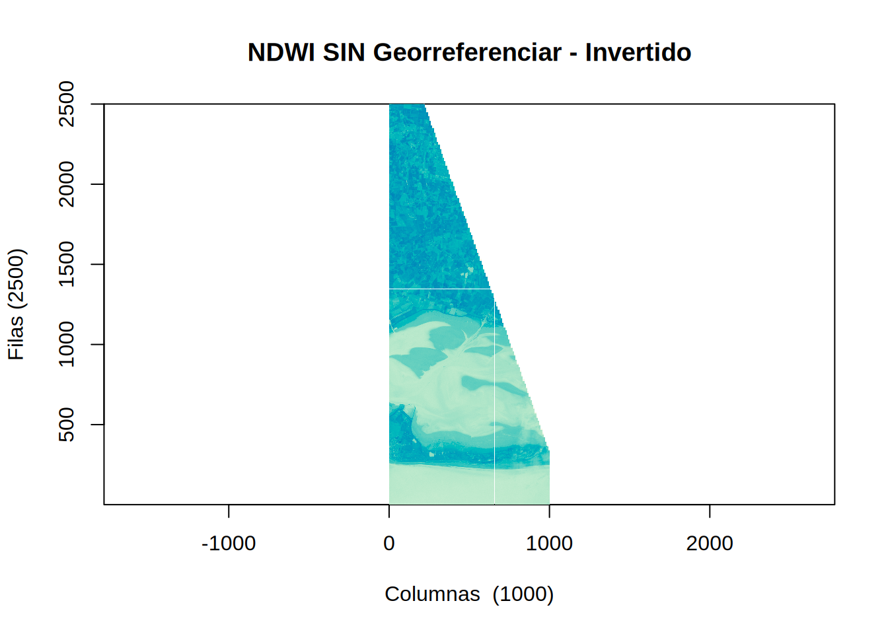
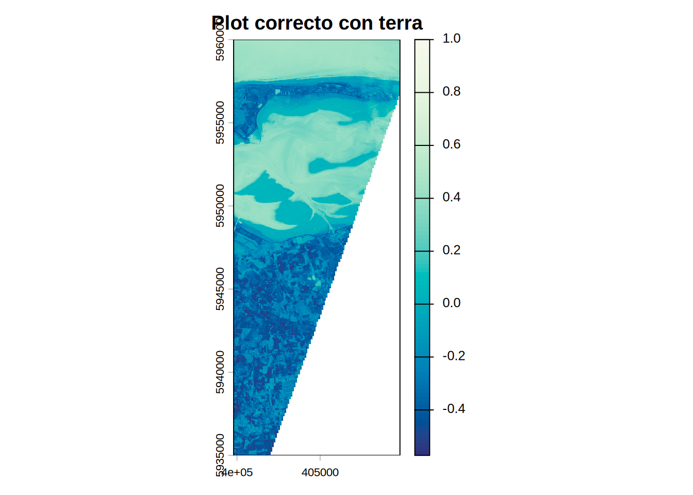
Loading required package: abindLoading required package: sfLinking to GEOS 3.12.1, GDAL 3.8.4, PROJ 9.4.0; sf_use_s2() is TRUE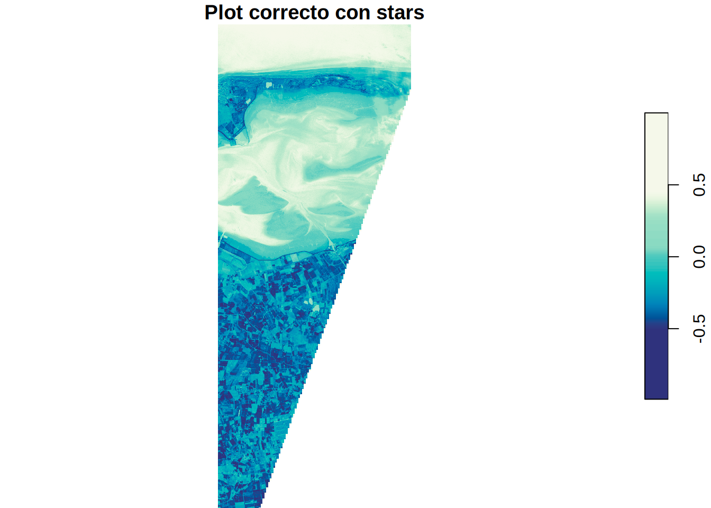
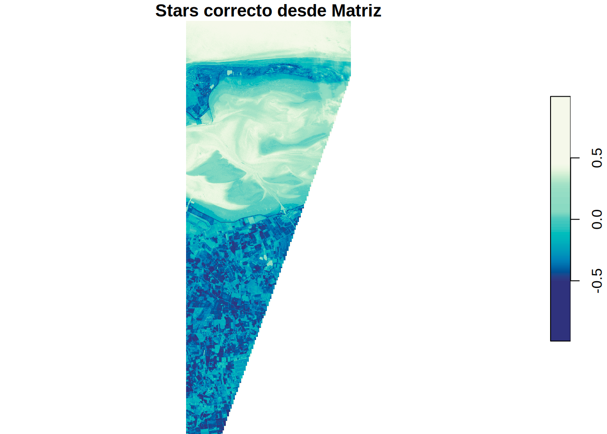
# #| eval: false
# -------------------------------
# IMPORTACIÓN DE LIBRERÍAS
# -------------------------------
library(terra)
library(grDevices)
# -------------------------------
# CONFIGURACIÓN DE RUTAS
# -------------------------------
ruta_txt <- "data/s2_shared_path.txt"
ruta_salida <- "data_heavy/raster/ndwi_sentinel_optimizado_r.tif"
if (!file.exists(ruta_txt)) {
cat("ERROR: Insumo ausente en", ruta_txt, "\n")
} else {
tryCatch({
# -------------------------------
# LECTURA DEL RASTER Y VENTANA
# -------------------------------
s2_path <- trimws(readLines(ruta_txt, warn = FALSE))
src <- rast(s2_path)
# Parámetros de la ventana (1000 cols x 2500 filas)
# Creamos un Extent (caja delimitadora)
ventana_row_cols <- ext(4001, 6500, 9981, 10980)
cat("Ventana en filas y columnas:", as.character(ventana_row_cols), "\n")
# Para extraer coordenadas en terra:
# primero extraemos el recorte y luego obtenemos
# su extensión
ventana_ext <- ext(src[4001:6500, 9981:10980, drop=FALSE])
cat("Ventana en coordenadas X, Y:", as.character(ventana_ext), "\n")
# ext(src) devuelve la extensión de toda la imagen
# Lectura selectiva en memoria (crop)
src_crop <- crop(src, ventana_ext)
green_band <- src_crop[[2]]
nir_band <- src_crop[[4]]
# -------------------------------
# CÁLCULO DEL NDWI DIRECTO GEORREFERENCIADO
# -------------------------------
# A diferencia del ejemplo anterior con matrices "crudas",
# si operamos directamente con objetos SpatRaster, terra
# mantiene la georreferenciación y el manejo de NAs automáticamente.
denominador <- green_band + nir_band
# Calculamos la fórmula (las operaciones entre SpatRasters conservan el CRS y Extent)
ndwi_rast <- ifel(denominador > 0, (green_band - nir_band) / denominador, NA)
# -------------------------------
# ESCRITURA EFICIENTE
# -------------------------------
dir.create(dirname(ruta_salida), recursive = TRUE, showWarnings = FALSE)
writeRaster(ndwi_rast, ruta_salida,
datatype = "FLT4S",
NAflag = -9999,
gdal = c("COMPRESS=LZW", "TILED=YES"),
overwrite = TRUE)
cat("Proceso optimizado exitoso. Archivo ligero guardado en:", ruta_salida, "\n")
# -------------------------------
# VISUALIZACIÓN CARTOGRÁFICA
# -------------------------------
# Extraemos los vectores de coordenadas reales (Equivalente a eastings y northings)
# xFromCol y yFromRow aplican internamente la "Resolución * Índice + Origen"
eastings <- xFromCol(ndwi_rast, 1:ncol(ndwi_rast))
head(eastings)
northings <- yFromRow(ndwi_rast, 1:nrow(ndwi_rast))
head(northings)
cat("Esquina superior izquierda (X, Y):", eastings[1], ",", northings[1], "\n")
cat("Resolución del eje X:", eastings[2] - eastings[1], "metros\n")
# Al graficar un objeto SpatRaster, R reconoce su naturaleza geográfica:
# el origen (índice 1,1) está ARRIBA a la izquierda.
# Las coordenadas Norte disminuyen conforme bajamos en las filas,
# alineando el mapa correctamente con el mundo real.
plot(ndwi_rast,
col = hcl.colors(100, "GnBu"),
main = "NDWI Georreferenciado - Correcto",
xlab = "Este (Metros)",
ylab = "Norte (Metros)",
axes = TRUE,
mar = c(3, 3, 2, 4)) # Ajuste básico de márgenes
# Cómo usar image corrigiendo la matriz
# A. Convertimos el raster a matriz
ndwi_mat <- as.matrix(ndwi_rast, wide=TRUE)
# B. Inversión de filas para corregir el eje Y (Norte arriba)
# Se utiliza el índice nrow(ndwi_mat):1 para invertir el orden vertical
ndwi_mat_corr <- ndwi_mat[nrow(ndwi_mat):1, ]
# C. Visualización con la matriz corregida
image(1:ncol(ndwi_mat_corr), 1:nrow(ndwi_mat_corr), t(ndwi_mat_corr),
col = hcl.colors(100, "GnBu"),
main = "NDWI SIN Georreferenciar. No Invertido",
xlab = "Columnas (1000)",
ylab = "Filas (2500)",
asp = 1) # asp = 1 equivale al plt.axis("equal") de Python
}, error = function(e) {
cat("Error crítico en el flujo de trabajo:", conditionMessage(e), "\n")
})
}Ventana en filas y columnas: ext(4001, 6500, 9981, 10980)
Ventana en coordenadas X, Y: ext(399800, 409800, 5935000, 5960000)
Proceso optimizado exitoso. Archivo ligero guardado en: data_heavy/raster/ndwi_sentinel_optimizado_r.tif
Esquina superior izquierda (X, Y): 399805 , 5959995
Resolución del eje X: 10 metros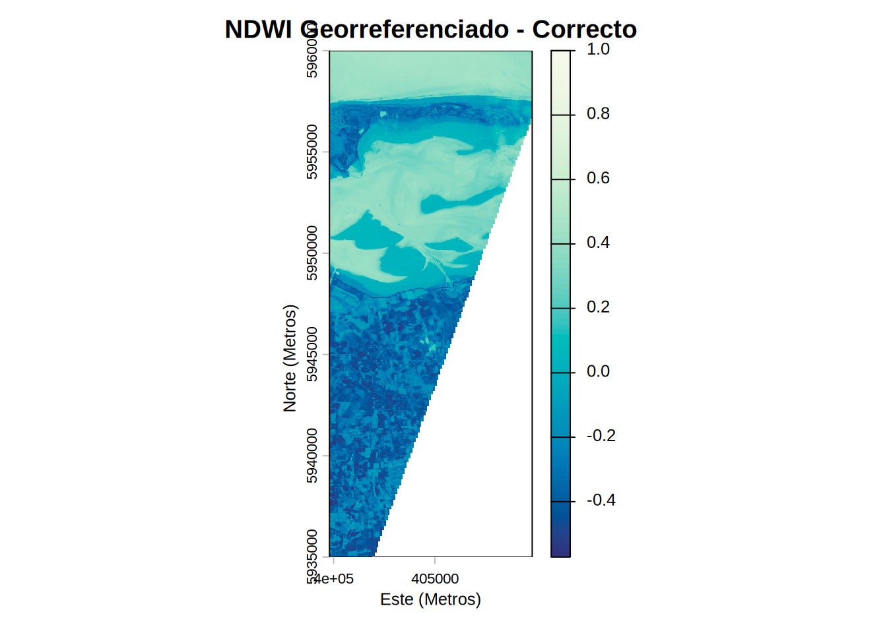
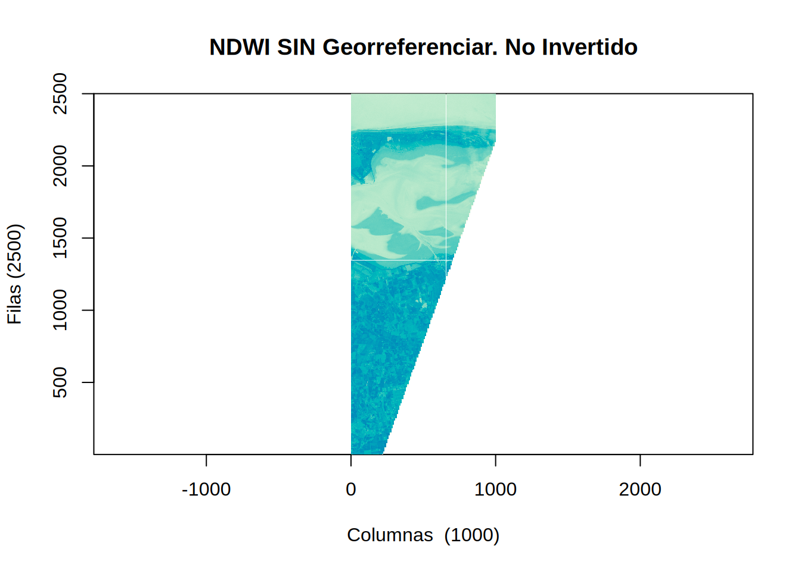
# #| eval: false
j_eval('
# -------------------------------
# IMPORTACIÓN DE LIBRERÍAS
# -------------------------------
# Rasters.jl es el paquete estándar en Julia para manipulación de datos espaciales
# Interactúa nativamente con ArchGDAL para lectura y escritura
using Rasters
using ArchGDAL
using Plots
# -------------------------------
# CONFIGURACIÓN DE RUTAS
# -------------------------------
ruta_txt = "data/s2_shared_path.txt"
ruta_salida = "data_heavy/raster/ndwi_sentinel_optimizado_julia_1.tif"
# Definimos el directorio físico donde depositaremos los gráficos generados.
# Esto es esencial porque nuestra función R j_eval ejecuta Julia en un proceso
# subyacente que no transfiere ventanas gráficas directamente a Quarto.
dir_graficos = "./images/"
mkpath(dir_graficos) # Crea la estructura de carpetas si no existe en el sistema
if !isfile(ruta_txt)
println("ERROR: Insumo ausente en ", ruta_txt)
else
try
# -------------------------------
# LECTURA DE LA RUTA DEL RASTER
# -------------------------------
s2_path = strip(read(ruta_txt, String))
# -------------------------------
# APERTURA DEL RASTER ORIGINAL
# -------------------------------
# --- OPTIMIZACIÓN: USO DE VENTANA ---
# Julia utiliza índices base 1, igual que R.
# Filas: 4001 a 6500, Columnas: 9981 a 10980
# En Rasters.jl, el orden espacial estándar es
# X (columnas) y Y (filas)
# Definición de coordenadas base 1 (estándar de Julia)
c_start, c_end = 9981, 10980
r_start, r_end = 4001, 6500
# Conversión a parámetros espaciales base 0 (estándar de C/GDAL)
xoff = c_start - 1
yoff = r_start - 1
xcols = c_end - c_start + 1
yrows = r_end - r_start + 1
# Evita la re-apertura del archivo: Al utilizar ArchGDAL.read con parámetros numéricos de ventana,
# la lectura ocurre utilizando el puntero ds ya establecido en memoria,
# eliminando el fallo de validación del sistema de archivos virtual.
green_mat, nir_mat = ArchGDAL.read(String(s2_path)) do ds
# ArchGDAL.read nativo transfiere directamente el bloque de bytes a una matriz de Julia
# Estructura: ArchGDAL.read(dataset, indice_banda, xoffset, yoffset, xsize, ysize)
g_mat = ArchGDAL.read(ds, 2, xoff, yoff, xcols, yrows)
n_mat = ArchGDAL.read(ds, 4, xoff, yoff, xcols, yrows)
return g_mat, n_mat
end
# -------------------------------
# CÁLCULO DEL NDWI
# -------------------------------
# Fórmula: (Green - NIR) / (Green + NIR)
denominador = green_mat .+ nir_mat
# ifelse. maneja la división condicional vectorizada
# El resultado es un Array crudo sin dimensiones espaciales
ndwi_mat = ifelse.(denominador .> 0, (green_mat .- nir_mat) ./ denominador, NaN32)
# -------------------------------
# OPTIMIZACIÓN 2: ESCRITURA EFICIENTE
# -------------------------------
# Definimos el objeto Raster de forma perezosa (solo metadatos)
# Usamos ArchGDAL.read para que el motor reconozca la ruta virtual de Sentinel
src = ArchGDAL.read(String(s2_path)) do ds
Raster(ds; lazy=true)
end
# Definición de la vista (solo para metadatos, no ejecutar read() sobre esto)
src_crop = view(src, X(c_start:c_end), Y(r_start:r_end))
# Reconstrucción del ráster con conversión a tipo de dato concreto (Float32)
# Se extraen las dimensiones espaciales (X, Y) de la vista perezosa para el objeto final
ndwi_rast = Raster(Float32.(ndwi_mat), dims(src_crop, (X, Y)))
# 2. Creación del directorio y escritura física optimizada
mkpath(dirname(ruta_salida))
write(ruta_salida, ndwi_rast, force=true,
options=Dict("COMPRESS"=>"LZW", "TILED"=>"YES"))
println("Reporte de proceso: Archivo guardado con éxito en: ", ruta_salida)
# --------------------------
# VISUALIZACIÓN CARTOGRÁFICA
# --------------------------
# 3. Visualización cartográfica georreferenciada
# El uso del objeto Raster asegura la orientación correcta y coordenadas UTM
p_correct = plot(ndwi_rast,
c=:GnBu,
title="NDWI con Georreferenciación. No Invertido",
xlabel="Easting (m)",
ylabel="Northing (m)",
aspect_ratio=:equal)
# En lugar de mostrarlo al vuelo con display(), lo escribimos a disco.
# Posteriormente R tomará el relevo para insertarlo en el documento.
ruta_p_correct = joinpath(dir_graficos, "julia_ndwi_correct.png")
savefig(p_correct, ruta_p_correct)
println("Gráfico correcto guardado en: ", ruta_p_correct)
# -------------------------------
# VISUALIZACIÓN CARTOGRÁFICA (ERRADA)
# -------------------------------
println("Cantidad de píxeles: ", size(ndwi_mat, 1), " en X, ", size(ndwi_mat, 2), " en Y")
# Al graficar la matriz cruda con heatmap, se asume un plano cartesiano.
# Julia/Plots posiciona el índice [1,1] en la esquina superior izquierda
# o inferior izquierda dependiendo del backend, pero sin coordenadas reales,
# la orientación geométrica no coincide con el Norte real.
p_bad = heatmap(ndwi_mat,
c=:GnBu,
title="NDWI SIN Georreferenciar",
xlabel="Columnas",
ylabel="Filas",
aspect_ratio=:equal)
# Guardamos el gráfico de la matriz errada
ruta_p_bad = joinpath(dir_graficos, "julia_ndwi_bad.png")
savefig(p_bad, ruta_p_bad)
println("Gráfico errado guardado en: ", ruta_p_bad)
# -------------------------------------------------------------------------
# Reporte de dimensiones y análisis de rotación de p_bad:
# -------------------------------------------------------------------------
println("Estructura de la matriz (ndwi_mat): ", size(ndwi_mat))
println("Dimensión 1 (Columnas/Eje X real): ", size(ndwi_mat, 1))
println("Dimensión 2 (Filas/Eje Y real): ", size(ndwi_mat, 2))
# 1. Orientación nativa [X, Y]: ArchGDAL en Julia lee las matrices como [Columnas, Filas].
# Nuestra matriz es de 1000 x 2500 (Dim 1 = 1000, Dim 2 = 2500).
# 2. Rotación Cartesiana en Plots.jl: Al usar heatmap() con una matriz cruda,
# la librería mapea la Dimensión 1 al eje Vertical (Y) y la Dimensión 2 al eje Horizontal (X).
# 3. Resultado visual: Como fuerza los 1000 píxeles a la vertical y los 2500 a la horizontal,
# la imagen termina "acostada" (rotada 90 grados a la izquierda respecto al mundo real).
# 4. Solución: Al usar un objeto `Raster` (como en p_correct), la librería Rasters.jl
# obliga al motor gráfico a respetar las dimensiones espaciales reales y su proyección.
# -------------------------------------------------------------------------
catch e
println("Error crítico en el flujo de trabajo: ", e)
end
end
')julia> # -------------------------------
julia> # IMPORTACIÓN DE LIBRERÍAS
julia> # -------------------------------
julia> # Rasters.jl es el paquete estándar en Julia para manipulación de datos espaciales
julia> # Interactúa nativamente con ArchGDAL para lectura y escritura
julia> using Rasters
julia> using ArchGDAL
julia> using Plots
julia> # -------------------------------
julia> # CONFIGURACIÓN DE RUTAS
julia> # -------------------------------
julia> ruta_txt = "data/s2_shared_path.txt"
"data/s2_shared_path.txt"
julia> ruta_salida = "data_heavy/raster/ndwi_sentinel_optimizado_julia_1.tif"
"data_heavy/raster/ndwi_sentinel_optimizado_julia_1.tif"
julia> # Definimos el directorio físico donde depositaremos los gráficos generados.
julia> # Esto es esencial porque nuestra función R j_eval ejecuta Julia en un proceso
julia> # subyacente que no transfiere ventanas gráficas directamente a Quarto.
julia> dir_graficos = "./images/"
"./images/"
julia> mkpath(dir_graficos) # Crea la estructura de carpetas si no existe en el sistema
"./images"
julia> if !isfile(ruta_txt) println("ERROR: Insumo ausente en ", ruta_txt) else try # ------------------------------- # LECTURA DE LA RUTA DEL RASTER # ------------------------------- s2_path = strip(read(ruta_txt, String)) # ------------------------------- # APERTURA DEL RASTER ORIGINAL # ------------------------------- # --- OPTIMIZACIÓN: USO DE VENTANA --- # Julia utiliza índices base 1, igual que R. # Filas: 4001 a 6500, Columnas: 9981 a 10980 # En Rasters.jl, el orden espacial estándar es # X (columnas) y Y (filas) # Definición de coordenadas base 1 (estándar de Julia) c_start, c_end = 9981, 10980 r_start, r_end = 4001, 6500 # Conversión a parámetros espaciales base 0 (estándar de C/GDAL) xoff = c_start - 1 yoff = r_start - 1 xcols = c_end - c_start + 1 yrows = r_end - r_start + 1 # Evita la re-apertura del archivo: Al utilizar ArchGDAL.read con parámetros numéricos de ventana, # la lectura ocurre utilizando el puntero ds ya establecido en memoria, # eliminando el fallo de validación del sistema de archivos virtual. green_mat, nir_mat = ArchGDAL.read(String(s2_path)) do ds # ArchGDAL.read nativo transfiere directamente el bloque de bytes a una matriz de Julia # Estructura: ArchGDAL.read(dataset, indice_banda, xoffset, yoffset, xsize, ysize) g_mat = ArchGDAL.read(ds, 2, xoff, yoff, xcols, yrows) n_mat = ArchGDAL.read(ds, 4, xoff, yoff, xcols, yrows) return g_mat, n_mat end # ------------------------------- # CÁLCULO DEL NDWI # ------------------------------- # Fórmula: (Green - NIR) / (Green + NIR) denominador = green_mat .+ nir_mat # ifelse. maneja la división condicional vectorizada # El resultado es un Array crudo sin dimensiones espaciales ndwi_mat = ifelse.(denominador .> 0, (green_mat .- nir_mat) ./ denominador, NaN32) # ------------------------------- # OPTIMIZACIÓN 2: ESCRITURA EFICIENTE # ------------------------------- # Definimos el objeto Raster de forma perezosa (solo metadatos) # Usamos ArchGDAL.read para que el motor reconozca la ruta virtual de Sentinel src = ArchGDAL.read(String(s2_path)) do ds Raster(ds; lazy=true) end # Definición de la vista (solo para metadatos, no ejecutar read() sobre esto) src_crop = view(src, X(c_start:c_end), Y(r_start:r_end)) # Reconstrucción del ráster con conversión a tipo de dato concreto (Float32) # Se extraen las dimensiones espaciales (X, Y) de la vista perezosa para el objeto final ndwi_rast = Raster(Float32.(ndwi_mat), dims(src_crop, (X, Y))) # 2. Creación del directorio y escritura física optimizada mkpath(dirname(ruta_salida)) write(ruta_salida, ndwi_rast, force=true, options=Dict("COMPRESS"=>"LZW", "TILED"=>"YES")) println("Reporte de proceso: Archivo guardado con éxito en: ", ruta_salida) # -------------------------- # VISUALIZACIÓN CARTOGRÁFICA # -------------------------- # 3. Visualización cartográfica georreferenciada # El uso del objeto Raster asegura la orientación correcta y coordenadas UTM p_correct = plot(ndwi_rast, c=:GnBu, title="NDWI con Georreferenciación. No Invertido", xlabel="Easting (m)", ylabel="Northing (m)", aspect_ratio=:equal) # En lugar de mostrarlo al vuelo con display(), lo escribimos a disco. # Posteriormente R tomará el relevo para insertarlo en el documento. ruta_p_correct = joinpath(dir_graficos, "julia_ndwi_correct.png") savefig(p_correct, ruta_p_correct) println("Gráfico correcto guardado en: ", ruta_p_correct) # ------------------------------- # VISUALIZACIÓN CARTOGRÁFICA (ERRADA) # ------------------------------- println("Cantidad de píxeles: ", size(ndwi_mat, 1), " en X, ", size(ndwi_mat, 2), " en Y") # Al graficar la matriz cruda con heatmap, se asume un plano cartesiano. # Julia/Plots posiciona el índice [1,1] en la esquina superior izquierda # o inferior izquierda dependiendo del backend, pero sin coordenadas reales, # la orientación geométrica no coincide con el Norte real. p_bad = heatmap(ndwi_mat, c=:GnBu, title="NDWI SIN Georreferenciar", xlabel="Columnas", ylabel="Filas", aspect_ratio=:equal) # Guardamos el gráfico de la matriz errada ruta_p_bad = joinpath(dir_graficos, "julia_ndwi_bad.png") savefig(p_bad, ruta_p_bad) println("Gráfico errado guardado en: ", ruta_p_bad) # ------------------------------------------------------------------------- # Reporte de dimensiones y análisis de rotación de p_bad: # ------------------------------------------------------------------------- println("Estructura de la matriz (ndwi_mat): ", size(ndwi_mat)) println("Dimensión 1 (Columnas/Eje X real): ", size(ndwi_mat, 1)) println("Dimensión 2 (Filas/Eje Y real): ", size(ndwi_mat, 2)) # 1. Orientación nativa [X, Y]: ArchGDAL en Julia lee las matrices como [Columnas, Filas]. # Nuestra matriz es de 1000 x 2500 (Dim 1 = 1000, Dim 2 = 2500). # 2. Rotación Cartesiana en Plots.jl: Al usar heatmap() con una matriz cruda, # la librería mapea la Dimensión 1 al eje Vertical (Y) y la Dimensión 2 al eje Horizontal (X). # 3. Resultado visual: Como fuerza los 1000 píxeles a la vertical y los 2500 a la horizontal, # la imagen termina "acostada" (rotada 90 grados a la izquierda respecto al mundo real). # 4. Solución: Al usar un objeto `Raster` (como en p_correct), la librería Rasters.jl # obliga al motor gráfico a respetar las dimensiones espaciales reales y su proyección. # ------------------------------------------------------------------------- catch e println("Error crítico en el flujo de trabajo: ", e) end end
Reporte de proceso: Archivo guardado con éxito en: data_heavy/raster/ndwi_sentinel_optimizado_julia_1.tif Gráfico correcto guardado en: ./images/julia_ndwi_correct.png Cantidad de píxeles: 1000 en X, 2500 en Y Gráfico errado guardado en: ./images/julia_ndwi_bad.png Estructura de la matriz (ndwi_mat): (1000, 2500) Dimensión 1 (Columnas/Eje X real): 1000 Dimensión 2 (Filas/Eje Y real): 2500
# -------------------------------------------------------------------------
# IMPORTACIÓN AL DOCUMENTO QUARTO MEDIANTE KNITR
# -------------------------------------------------------------------------
# include_graphics() toma las imágenes exportadas por Julia y las inyecta en el flujo
# del documento, heredando automáticamente las directrices #| fig-align y #| out-width
knitr::include_graphics(c("./images/julia_ndwi_correct.png", "./images/julia_ndwi_bad.png"))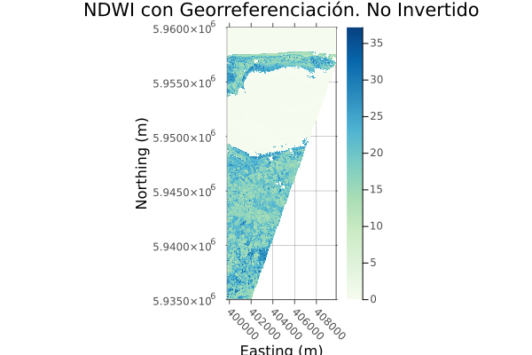
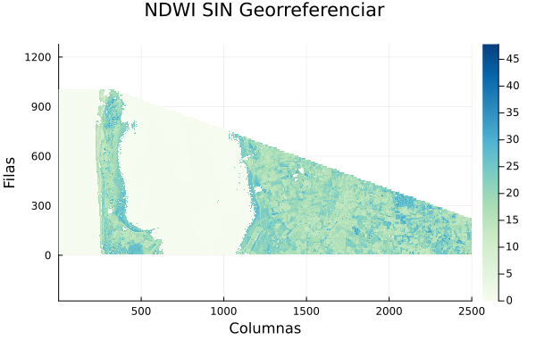
j_eval('
# -------------------------------
# IMPORTACIÓN DE LIBRERÍAS
# -------------------------------
using Rasters
using ArchGDAL
using Plots
# -------------------------------
# CONFIGURACIÓN DE RUTAS
# -------------------------------
ruta_txt = "data/s2_shared_path.txt"
ruta_salida = "data_heavy/raster/ndwi_sentinel_optimizado_julia.tif"
# Definimos el directorio físico donde depositaremos los gráficos generados.
# Al estar ejecutando Julia dentro de R mediante j_eval, los gráficos generados
# no siempre se envían a la salida estándar visual. Escribirlos en disco garantiza
# que Quarto pueda integrarlos en el documento final.
dir_graficos = "./images/"
mkpath(dir_graficos)
if !isfile(ruta_txt)
println("ERROR: Insumo ausente en ", ruta_txt)
else
try
# -------------------------------
# LECTURA DE LA RUTA DEL RASTER
# -------------------------------
s2_path = strip(read(ruta_txt, String))
# -------------------------------
# OPTIMIZACIÓN 1: EXTRACCIÓN DE BAJO NIVEL (BUFFER)
# -------------------------------
# Definición de coordenadas base 1 (estándar de Julia)
c_start, c_end = 9981, 10980
r_start, r_end = 4001, 6500
# Conversión a parámetros espaciales base 0 (estándar de C/GDAL)
xoff = c_start - 1
yoff = r_start - 1
xcols = c_end - c_start + 1
yrows = r_end - r_start + 1
# Usamos ArchGDAL nativo para transferir directamente el bloque de bytes a la RAM.
# Esto es altamente eficiente y a prueba de fallos con archivos virtuales (.zip).
green_mat, nir_mat = ArchGDAL.read(String(s2_path)) do ds
g_mat = ArchGDAL.read(ds, 2, xoff, yoff, xcols, yrows)
n_mat = ArchGDAL.read(ds, 4, xoff, yoff, xcols, yrows)
return g_mat, n_mat
end
# -------------------------------
# CÁLCULO DEL NDWI
# -------------------------------
denominador = green_mat .+ nir_mat
# El resultado es un Array de Julia puro [Columnas, Filas] sin inteligencia espacial.
# Si lo graficáramos ahora, saldría rotado e invertido.
ndwi_mat = ifelse.(denominador .> 0, (green_mat .- nir_mat) ./ denominador, NaN32)
# -------------------------------
# RECONSTRUCCIÓN ESPACIAL Y ESCRITURA
# -------------------------------
# Para arreglar la matriz, extraemos las dimensiones reales del archivo fuente.
# Al usar lazy=true, solo leemos los metadatos (Extent, CRS, Resolución) sin gastar RAM.
src = ArchGDAL.read(String(s2_path)) do ds
Raster(ds; lazy=true)
end
# Creamos una "vista" de los metadatos para nuestro recorte
src_crop = view(src, X(c_start:c_end), Y(r_start:r_end))
# ¡LA MAGIA OCURRE AQUÍ!
# Fusionamos la matriz cruda con los metadatos espaciales (dims).
# Ahora el objeto sabe exactamente dónde está el Norte y cuánto mide cada píxel.
ndwi_rast = Raster(Float32.(ndwi_mat), dims(src_crop, (X, Y)))
# Guardamos en disco
mkpath(dirname(ruta_salida))
write(ruta_salida, ndwi_rast, force=true,
options=Dict("COMPRESS"=>"LZW", "TILED"=>"YES"))
println("Proceso optimizado exitoso. Archivo guardado en: ", ruta_salida)
# --------------------------
# VISUALIZACIÓN CARTOGRÁFICA
# --------------------------
# Al graficar ndwi_rast, Plots.jl detecta que es un objeto espacial (no una matriz simple).
# El motor gráfico alinea automáticamente el eje Y con el Norte real y el eje X con el Este,
# corrigiendo cualquier rotación nativa de la memoria.
p_good = plot(ndwi_rast,
c=:GnBu,
title="NDWI Georreferenciado",
xlabel="Este (Metros)",
ylabel="Norte (Metros)",
aspect_ratio=:equal) # Evita que los píxeles se estiren
# Guardamos la figura georreferenciada correctamente
ruta_p_good = joinpath(dir_graficos, "julia_ndwi_good.png")
savefig(p_good, ruta_p_good)
println("Gráfico espacial exportado: ", ruta_p_good)
# -------------------------------------------------------------------------
# VISUALIZACIÓN CARTOGRÁFICA 2: LA SOLUCIÓN MANUAL (Matriz cruda corregida)
# -------------------------------------------------------------------------
# Si graficamos la matriz cruda `ndwi_mat` sola, saldrá rotada e invertida.
# Para corregirlo usando heatmap(), aplicamos dos operaciones matemáticas:
# 1. ndwi_mat\' (Transpuesta): Convierte [X, Y] a [Y, X], evitando la rotación de 90°.
# 2. yflip=true: Invierte visualmente el eje Y para que el índice 1 quede arriba (Norte).
ndwi_mat_transpuesta = ndwi_mat\'
p_manual = heatmap(ndwi_mat_transpuesta,
c=:GnBu,
yflip=true, # Invertimos el eje Y desde el motor gráfico
title="2. Solución Manual (Matriz Transpuesta e Invertida)",
xlabel="Columnas (X)",
ylabel="Filas (Y)",
aspect_ratio=:equal)
# Exportamos la figura corregida vía motor gráfico
ruta_p_manual = joinpath(dir_graficos, "julia_ndwi_manual_yflip.png")
savefig(p_manual, ruta_p_manual)
println("Gráfico manual (yflip) exportado: ", ruta_p_manual)
# ------------------------------------------
# ALTERNATIVA A VISUALIZACIÓN CARTOGRÁFICA 2
# ------------------------------------------
# Preparamos la matriz matemáticamente en la memoria ANTES de graficarla:
# 1. ndwi_mat\' (Transpuesta): Cambia [X, Y] a [Y, X] para evitar que salga acostada.
# 2. reverse(..., dims=1): Invierte el eje Y físicamente en la memoria para que
# la fila 1 (Norte) quede reordenada correctamente.
ndwi_mat_corregida = reverse(ndwi_mat\', dims=1)
# Ahora pasamos la matriz ya estructurada y omitimos el parámetro yflip=true
p_manual_rev = heatmap(ndwi_mat_corregida,
c=:GnBu,
title="3. Alternativa Manual (Matriz pre-reversada)",
xlabel="Columnas (X)",
ylabel="Filas (Y)",
aspect_ratio=:equal)
# Exportamos la alternativa estructural
ruta_p_manual_rev = joinpath(dir_graficos, "julia_ndwi_manual_reverse.png")
savefig(p_manual_rev, ruta_p_manual_rev)
println("Gráfico manual (reverse) exportado: ", ruta_p_manual_rev)
catch e
println("Error crítico en el flujo de trabajo: ", e)
end
end
')
# -------------------------------------------------------------------------
# IMPORTACIÓN AL DOCUMENTO QUARTO MEDIANTE KNITR
# -------------------------------------------------------------------------
# include_graphics inyecta las tres imágenes secuencialmente en el documento,
# aplicando las configuraciones del chunk (#| fig-align: center y #| out-width: "80%")
knitr::include_graphics(c(
"./images/julia_ndwi_good.png",
"./images/julia_ndwi_manual_yflip.png",
"./images/julia_ndwi_manual_reverse.png"
))| Operación | Python 🐍 | R 🔵 | Julia 🟣 |
|---|---|---|---|
| Leer ruta desde texto | open(ruta).read().strip() |
trimws(readLines(ruta)) |
strip(read(ruta, String)) |
| Apertura de raster | rasterio.open(ruta) |
rast(ruta) |
ArchGDAL.read(ruta) / Raster(ruta) |
| Definición de ventana | Window(col, row, w, h) |
ext(xmin, xmax, ymin, ymax) |
Índices: xoff, yoff, xcols, yrows |
| Recorte / Extracción espacial | src.read(banda, window=v) |
crop(src, ventana) |
ArchGDAL.read(ds, banda, x, y, w, h) |
| Álgebra de mapas condicional | np.where(cond, true, false) |
ifel(cond, true, false) |
ifelse.(cond, true, false) |
| Extracción de metadatos (Perfil) | src.profile / src.window_transform() |
Nativo en el objeto SpatRaster |
dims(raster_view, (X, Y)) |
| Escritura de raster a disco | dst.write(arr, 1) |
writeRaster(rast, ruta) |
write(ruta, rast) |
| Visualización de matriz cruda | plt.imshow(arr) |
image(..., t(arr)) |
heatmap(arr') |
| Visualización con coordenadas | xarray.plot() |
plot(rast) |
plot(rast) |
Extraer una zona de interés (recorte) a partir de un raster masivo mejora la eficiencia computacional en etapas posteriores. Esta operación requiere definir una caja delimitadora (Bounding Box) en las mismas coordenadas del objeto matricial.
Para extraer las coordenadas de la zona de interés dentro de QGIS:
Ctrl + Alt + P)# Acceder a la interfaz del lienzo de mapa (map canvas) activo
canvas = iface.mapCanvas()
# Recuperar el objeto de extensión geográfica actual (QgsRectangle)
extent = canvas.extent()
# Impresión de los límites espaciales del área de visualización
print(f"X Mínimo: {extent.xMinimum()}") # Coordenada oeste
print(f"Y Mínimo: {extent.yMinimum()}") # Coordenada sur
print(f"X Máximo: {extent.xMaximum()}") # Coordenada este
print(f"Y Máximo: {extent.yMaximum()}") # Coordenada norte
# Obtención del punto central de la vista actual
print(f"Centro: {extent.center().toString()}")# #| eval: false
import rioxarray
# Cargar el raster del modelo de vientos (Huracanes)
vientos_modelo = rioxarray.open_rasterio("data_heavy/raster/st24_h_50_9377_py.tif")
# Definición de coordenadas límites (Bounding Box) en sistema EPSG:9377
min_x, min_y = 4762861.122004522, 2474583.429398312
max_x, max_y = 5371716.890535228, 2726316.6215890343
# Ejecución del método espacial de recorte por contorno rectangular (clip_box)
# Este método reduce drásticamente el tamaño del archivo al aislar solo nuestra área de interés
vientos_recorte = vientos_modelo.rio.clip_box(minx=min_x, miny=min_y, maxx=max_x, maxy=max_y)
# Exportación de la matriz reducida a un nuevo archivo
ruta_salida = "data_heavy/raster/vientos_huracan_recorte_py.tif"
vientos_recorte.rio.to_raster(ruta_salida)
print(f"Proceso exitoso. Raster guardado en: {ruta_salida}")Proceso exitoso. Raster guardado en: data_heavy/raster/vientos_huracan_recorte_py.tifprint(f"Dimensiones recortadas: {vientos_recorte.rio.width}x{vientos_recorte.rio.height}")Dimensiones recortadas: 23x11# #| eval: false
library(terra)
# Cargar el raster del modelo de vientos (Huracanes)
vientos_modelo <- rast("data_heavy/raster/st24_h_50_9377_py.tif")
# Construcción explícita de un objeto de extensión (xmin, xmax, ymin, ymax)
# Utilizamos los límites exactos del Bounding Box en EPSG:9377
extension_recorte <- ext(4762861.122004522, 5371716.890535228, 2474583.429398312, 2726316.6215890343)
# Uso de la función crop para extraer la sub-cuadrícula de interés
# Esto recorta el área del huracán y descarta el resto de los datos
vientos_recorte <- crop(vientos_modelo, extension_recorte)
# Escritura a disco del raster reducido
ruta_salida <- "data_heavy/raster/vientos_huracan_recorte_r.tif"
writeRaster(vientos_recorte, ruta_salida, overwrite=TRUE)
cat("Proceso exitoso. Raster guardado en:", ruta_salida, "\n")Proceso exitoso. Raster guardado en: data_heavy/raster/vientos_huracan_recorte_r.tif cat("Dimensiones recortadas (filas, columnas, bandas): ")Dimensiones recortadas (filas, columnas, bandas): print(dim(vientos_recorte))[1] 9 22 1j_eval('
using Rasters
# -------------------------------------------------------------------------
# 1. CARGA DEL RASTER ORIGINAL
# -------------------------------------------------------------------------
# Cargamos el modelo de vientos (Huracanes) en sistema de coordenadas 9377.
# El uso de ";" seguido de "nothing" evita el volcado de metadatos en la consola.
vientos_modelo = Raster("data_heavy/raster/st24_h_50_9377_py.tif"); nothing
# -------------------------------------------------------------------------
# 2. RECORTE ESPACIAL MEDIANTE PREDICADOS
# -------------------------------------------------------------------------
# En Julia/Rasters, el recorte se realiza mediante indexación dimensional.
# Utilizamos "Between(min, max)" para definir el rango geográfico exacto
# (Bounding Box) proporcionado para el área del huracán.
vientos_recorte = vientos_modelo[
X(Between(4762861.122004522, 5371716.890535228)),
Y(Between(2474583.429398312, 2726316.6215890343))
]; nothing
# -------------------------------------------------------------------------
# 3. EXPORTACIÓN Y REPORTE
# -------------------------------------------------------------------------
ruta_salida = "data_heavy/raster/vientos_huracan_recorte_julia.tif"
write(ruta_salida, vientos_recorte); nothing
# Imprimimos las dimensiones resultantes para verificar la reducción del dataset
println("Proceso de recorte finalizado con éxito.")
println("Ruta de salida: ", ruta_salida)
println("Dimensiones de la grilla extraída: ", size(vientos_recorte))
println("Metadatos de dimensiones: ", dims(vientos_recorte))
')| Operación | Python 🐍 | R 🔵 | Julia 🟣 |
|---|---|---|---|
| Cargar ráster | rioxarray.open_rasterio() |
rast() |
Raster() |
| Definir extensión | Parámetros minx, miny, maxx, maxy |
ext(xmin, xmax, ymin, ymax) |
Predicados Between(min, max) |
| Ejecutar recorte | raster.rio.clip_box() |
crop() |
raster[X(...), Y(...)] |
| Guardar ráster | raster.rio.to_raster() |
writeRaster() |
write() |
| Consultar tamaño | raster.rio.width / .height |
dim() |
size() |
La adquisición de Modelos Digitales de Elevación (MDE) es un paso común en la programación SIG. Tradicionalmente, la descarga manual de estos insumos presentaba cuellos de botella geográficos y computacionales. Actualmente, plataformas como Google Earth Engine (GEE) permiten acceder al catálogo global del Shuttle Radar Topography Mission (SRTM) y procesar los recortes de interés directamente en la nube. Este enfoque reduce el ancho de banda requerido y estandariza el preprocesamiento de los datos, facilitando el análisis topográfico para áreas específicas como la Sabana de Bogotá y el campus de la Universidad Nacional de Colombia.
El primer paso para interactuar con la API de Earth Engine es la autenticación e inicialización del cliente. Este proceso verifica las credenciales de acceso asociadas al proyecto de Google Cloud.
# #| eval: false
# 1. IMPORTACIÓN DE LIBRERÍAS
# 'ee' es la librería principal de Google Earth Engine.
import ee
# 2. AUTENTICACIÓN
# Este comando abre una ventana en el navegador para dar permisos a Google.
# Solo es necesario correrlo la primera vez o si el token de acceso expira.
ee.Authenticate()True# 3. INICIALIZACIÓN DEL PROYECTO
# Debemos especificar el ID del proyecto que creamos en Google Cloud.
# Para este curso usamos el proyecto: "ee-giswqg"
ee.Initialize(project="ee-giswqg")
print("Google Earth Engine se ha inicializado con éxito!")Google Earth Engine se ha inicializado con éxito!# 1. IMPORTACIÓN DE LIBRERÍAS
# 'rgee' es el paquete puente de R hacia la API de Python de Earth Engine.
library(rgee) # Librería no instalada en el contenedor
# 2. INICIALIZACIÓN Y AUTENTICACIÓN
# La función ee_Initialize gestiona tanto la autenticación como la inicialización.
# Especificamos el proyecto de Google Cloud correspondiente.
ee_Initialize(project = "ee-giswqg")
print("Google Earth Engine se ha inicializado con éxito en R!")j_eval('
# 1. IMPORTACIÓN DE LIBRERÍAS
# Julia utiliza PyCall para interactuar nativamente con la API de Python de Earth Engine.
using PyCall # Librería no instalada en el contenedor
const ee = pyimport("ee")
# 2. AUTENTICACIÓN
# ee.Authenticate() invoca la ventana del navegador si el token no existe.
ee.Authenticate()
# 3. INICIALIZACIÓN DEL PROYECTO
# Especificamos el ID del proyecto de Google Cloud.
ee.Initialize(project="ee-giswqg")
println("Google Earth Engine se ha inicializado con éxito en Julia!")
')Librerías de terceros facilitan la conversión y empaquetado de las estructuras de datos de Earth Engine hacia formatos locales como GeoTIFF. Cuando los paquetes de ayuda (como geedim o dependencias de subprocesamiento) no se encuentran disponibles en el entorno, se pueden usar alternativas de descarga nativa con el API de GEE.
# -------------------------------
# 1. IMPORTACIÓN DE LIBRERÍAS
# -------------------------------
import ee
import geemap
import os
# import geedim #Nota: no está instalada en el contenedor
# -------------------------------
# 2. CARGA DEL MODELO DIGITAL DE ELEVACIÓN
# -------------------------------
# Cargamos la imagen global de SRTM (30 metros de resolución)
srtm = ee.Image("USGS/SRTMGL1_003")
# -------------------------------
# 3. DEFINICIÓN DEL ÁREA DE DESCARGA (BOGOTÁ)
# -------------------------------
# Definimos el punto base (Universidad Nacional)
unal_punto = ee.Geometry.Point([-74.084, 4.638])
# Creamos una "caja delimitadora" (Bounding Box) alrededor del punto.
# Usamos un buffer de 15,000 metros (15 km) de radio y extraemos sus límites (.bounds())
roi_bogota = unal_punto.buffer(15000).bounds()
# -------------------------------
# 4. CONFIGURACIÓN DE LA RUTA LOCAL
# -------------------------------
directorio_salida = "data_heavy/raster"
# os.makedirs asegura que la carpeta exista antes de intentar guardar el archivo
os.makedirs(directorio_salida, exist_ok=True)
ruta_tif = os.path.join(directorio_salida, "mde_bogota_srtm_elevation.tif")
# -------------------------------
# 5. EJECUCIÓN DE LA DESCARGA
# -------------------------------
print("Iniciando la petición al servidor de Earth Engine...")
print("Descargando GeoTIFF (esto puede tomar unos segundos/minutos dependiendo de tu conexión)...")
# geemap procesa la imagen en los servidores de Google, la empaqueta y la descarga a tu PC
geemap.download_ee_image(
image=srtm,
filename=ruta_tif,
scale=30, # Resolución espacial original del SRTM (30 metros/píxel)
region=roi_bogota, # Forzamos el recorte al área de Bogotá
crs="EPSG:4326" # Guardamos nativamente en coordenadas geográficas WGS84
)
print(f"\n DESCARGA COMPLETADA CON ÉXITO")
print(f"El MDE de Bogotá está disponible físicamente en: {ruta_tif}")library(rgee) # Librería no instalada en el contenedor
# -------------------------------
# 1. CARGA DEL MODELO DIGITAL DE ELEVACIÓN
# -------------------------------
srtm <- ee$Image("USGS/SRTMGL1_003")
# -------------------------------
# 2. DEFINICIÓN DEL ÁREA DE DESCARGA (BOGOTÁ)
# -------------------------------
unal_punto <- ee$Geometry$Point(c(-74.084, 4.638))
roi_bogota <- unal_punto$buffer(15000)$bounds()
# -------------------------------
# 3. CONFIGURACIÓN DE LA RUTA LOCAL
# -------------------------------
directorio_salida <- "data_heavy/raster"
if (!dir.exists(directorio_salida)) {
dir.create(directorio_salida, recursive = TRUE)
}
ruta_tif <- file.path(directorio_salida, "mde_bogota_srtm_r.tif")
# -------------------------------
# 4. EJECUCIÓN DE LA DESCARGA
# -------------------------------
cat("Iniciando la petición al servidor de Earth Engine...\n")
# ee_as_raster transfiere y convierte el objeto ee.Image a un objeto rastar/SpatRaster nativo.
# Utiliza internamente protocolos de drive o enlace directo temporal.
mde_local <- ee_as_raster(
image = srtm,
region = roi_bogota,
scale = 30,
dsn = ruta_tif,
crs = "EPSG:4326"
)
cat("DESCARGA COMPLETADA CON ÉXITO\n")j_eval('
using PyCall # Librería no instalada en el contenedor
const ee = pyimport("ee")
# -------------------------------
# 1. IMPORTACIÓN DE LIBRERÍAS Y CARGA DEL MDE
# -------------------------------
# En Julia podemos invocar módulos de Python como geemap a través de PyCall
geemap = pyimport("geemap")
os = pyimport("os")
srtm = ee.Image("USGS/SRTMGL1_003")
# -------------------------------
# 2. DEFINICIÓN DEL ÁREA DE DESCARGA (BOGOTÁ)
# -------------------------------
unal_punto = ee.Geometry.Point([-74.084, 4.638])
roi_bogota = unal_punto.buffer(15000).bounds()
# -------------------------------
# 3. CONFIGURACIÓN DE LA RUTA LOCAL
# -------------------------------
directorio_salida = "data_heavy/raster"
os.makedirs(directorio_salida, exist_ok=true)
ruta_tif = joinpath(directorio_salida, "mde_bogota_srtm_jl.tif")
# -------------------------------
# 4. EJECUCIÓN DE LA DESCARGA
# -------------------------------
println("Iniciando la petición al servidor de Earth Engine...")
geemap.download_ee_image(
image=srtm,
filename=ruta_tif,
scale=30,
region=roi_bogota,
crs="EPSG:4326"
)
println("DESCARGA COMPLETADA CON ÉXITO")
')Cuando los paquetes de abstracción presentan fallos de dependencias, es posible interactuar directamente con la API REST de Google Earth Engine. El método getDownloadURL solicita a los servidores la generación de un archivo comprimido que contiene la imagen recortada, la cual se procesa posteriormente con las utilidades estándar del sistema.
Al utilizar el método getDownloadURL de Google Earth Engine, el servidor genera de forma automática un nombre de archivo que concatena el prefijo definido en el parámetro name con el nombre técnico de la banda del producto (en el caso del SRTM, la banda única es elevation). Este proceso produce un archivo con una nomenclatura de doble punto (ej. mde_bogota_srtm.elevation.tif).
Desde una perspectiva de arquitectura de software y gestión de datos, los nombres de archivos con múltiples puntos pueden inducir a errores en la interpretación de extensiones por parte de ciertos sistemas operativos o librerías de lectura ráster que esperan una extensión estándar única. Para garantizar la interoperabilidad del flujo de trabajo y la compatibilidad con herramientas de geoprocesamiento posteriores, se implementa una rutina de renombrado físico inmediatamente después de la descompresión, transformando el nombre a mde_bogota_srtm_elevation.tif.
# -------------------------------
# 1. IMPORTACIÓN DE LIBRERÍAS
# -------------------------------
import ee
import os
import urllib.request # Librería nativa de Python para descargar URLs
import zipfile # Librería nativa de Python para descomprimir
# -------------------------------
# 2. CARGA DEL MDE Y ÁREA DE DESCARGA
# -------------------------------
srtm = ee.Image("USGS/SRTMGL1_003")
# Definimos el punto y el área de interés (Bounding Box de ~30x30 km)
unal_punto = ee.Geometry.Point([-74.084, 4.638])
roi_bogota = unal_punto.buffer(15000).bounds()
# -------------------------------
# 3. CONFIGURACIÓN DE RUTAS LOCALES
# -------------------------------
directorio_salida = "data_heavy/raster"
os.makedirs(directorio_salida, exist_ok=True)
# Archivo temporal donde caerá el ZIP que nos envía Google
ruta_zip = os.path.join(directorio_salida, "mde_bogota_temp.zip")
# -------------------------------
# 4. PETICIÓN NATIVA A EARTH ENGINE (SIN DEPENDENCIAS EXTRA)
# -------------------------------
print("Solicitando el enlace de descarga a los servidores de Google...")
# getDownloadURL() es el método nativo de la API de EE.
# Empaqueta nuestro recorte a 30m en un archivo comprimido.
url_descarga = srtm.getDownloadURL({
'name': 'mde_bogota_srtm', # Nombre interno del archivo .tif
'scale': 30, # Resolución espacial original (30m)
'crs': 'EPSG:4326', # Coordenadas geográficas WGS84
'region': roi_bogota # Filtro espacial obligatorio
})
print(f"Enlace generado. Iniciando descarga...")
# -------------------------------
# 5. DESCARGA Y EXTRACCIÓN AUTOMÁTICA
# -------------------------------
# Descargamos el archivo ZIP desde la URL generada
urllib.request.urlretrieve(url_descarga, ruta_zip)
print("Descarga finalizada. Descomprimiendo el archivo GeoTIFF...")
with zipfile.ZipFile(ruta_zip, 'r') as zip_ref:
# Obtenemos el nombre del archivo que Google metió en el ZIP
# Probablemente: "mde_bogota_srtm.elevation.tif"
nombre_original_ee = zip_ref.namelist()[0]
# Extraemos el contenido
zip_ref.extractall(directorio_salida)
# Definimos las rutas para el renombrado
ruta_antigua = os.path.join(directorio_salida, nombre_original_ee)
ruta_nueva = os.path.join(directorio_salida, "mde_bogota_srtm_elevation.tif")
# Ejecutamos el cambio de nombre en el sistema de archivos
if os.path.exists(ruta_antigua):
os.rename(ruta_antigua, ruta_nueva)
# Limpieza del disco: borramos el ZIP porque ya tenemos el .tif
os.remove(ruta_zip)
print(f"\nPROCESO COMPLETADO CON ÉXITO")
print(f"El MDE de Bogotá ha sido renombrado a: {ruta_nueva}")library(rgee) # Librería no instalada en el contenedor
# -------------------------------
# 1. CARGA DEL MDE Y ÁREA DE DESCARGA
# -------------------------------
srtm <- ee$Image("USGS/SRTMGL1_003")
unal_punto <- ee$Geometry$Point(c(-74.084, 4.638))
roi_bogota <- unal_punto$buffer(15000)$bounds()
# -------------------------------
# 2. RUTAS LOCALES
# -------------------------------
directorio_salida <- "data_heavy/raster"
if (!dir.exists(directorio_salida)) dir.create(directorio_salida, recursive = TRUE)
ruta_zip <- file.path(directorio_salida, "mde_bogota_temp.zip")
# -------------------------------
# 3. PETICIÓN NATIVA A EARTH ENGINE
# -------------------------------
cat("Solicitando el enlace de descarga...\n")
# Estructuración de los parámetros para el método getDownloadURL()
parametros <- list(
name = 'mde_bogota_srtm_r',
scale = 30,
crs = 'EPSG:4326',
region = roi_bogota
)
url_descarga <- srtm$getDownloadURL(parametros)
# -------------------------------
# 4. DESCARGA Y EXTRACCIÓN
# -------------------------------
download.file(url_descarga, destfile = ruta_zip, mode = "wb", quiet = TRUE)
unzip(ruta_zip, exdir = directorio_salida)
file.remove(ruta_zip)
cat("PROCESO COMPLETADO CON ÉXITO\n")j_eval('
using Downloads
using ZipFile
using PyCall # Librería no instalada en el contenedor
const ee = pyimport("ee")
# -------------------------------
# 1. CARGA DEL MDE Y ÁREA DE DESCARGA
# -------------------------------
srtm = ee.Image("USGS/SRTMGL1_003")
unal_punto = ee.Geometry.Point([-74.084, 4.638])
roi_bogota = unal_punto.buffer(15000).bounds()
# -------------------------------
# 2. RUTAS LOCALES
# -------------------------------
directorio_salida = "data_heavy/raster"
isdir(directorio_salida) || mkpath(directorio_salida)
ruta_zip = joinpath(directorio_salida, "mde_bogota_temp.zip")
# -------------------------------
# 3. PETICIÓN NATIVA A EARTH ENGINE
# -------------------------------
println("Solicitando el enlace de descarga...")
parametros = Dict(
"name" => "mde_bogota_srtm_jl",
"scale" => 30,
"crs" => "EPSG:4326",
"region" => roi_bogota
)
url_descarga = srtm.getDownloadURL(parametros)
# -------------------------------
# 4. DESCARGA Y EXTRACCIÓN
# -------------------------------
Downloads.download(url_descarga, ruta_zip)
# Extracción manual del contenido del ZIP
reader = ZipFile.Reader(ruta_zip)
for f in reader.files
out_path = joinpath(directorio_salida, f.name)
open(out_path, "w") do io
write(io, read(f))
end
end
close(reader)
rm(ruta_zip)
println("PROCESO COMPLETADO CON ÉXITO")
')| Operación | Python 🐍 | R 🔵 | Julia 🟣 |
|---|---|---|---|
| Autenticación GEE | ee.Authenticate() |
ee_Initialize() |
ee.Authenticate() |
| Inicialización GEE | ee.Initialize(project="id") |
ee_Initialize(project="id") |
ee.Initialize(project="id") |
| Bounding Box (Límites) | geom.bounds() |
geom$bounds() |
geom.bounds() |
| Descarga (vía Librería) | geemap.download_ee_image() |
ee_as_raster() |
geemap.download_ee_image() |
| URL de Descarga (REST) | img.getDownloadURL() |
img$getDownloadURL() |
img.getDownloadURL() |
| Petición HTTP (Download) | urllib.request.urlretrieve() |
download.file() |
Downloads.download() |
| Crear Carpetas | os.makedirs(..., exist_ok=True) |
dir.create(..., recursive=TRUE) |
mkpath(...) |
| Descompresión ZIP | zipfile.ZipFile().extractall() |
unzip() |
ZipFile.Reader() |
El Modelo Digital de Elevación (MDE) crudo es solo el punto de partida. A partir de la matriz de elevación, podemos extraer variables geomorfométricas críticas mediante el análisis de vecindad (evaluando cómo interactúa cada píxel con los 8 píxeles que lo rodean).
Los tres productos derivados más comunes y útiles en el análisis espacial son:
El MDE de la misión SRTM descargado se encuentra originalmente en EPSG:4326 (Coordenadas Geográficas). Esto implica que las distancias horizontales (X, Y) se miden en grados, mientras que la elevación (Z) se mide en metros.
Si se aplican algoritmos de pendiente o sombreado directamente sobre esta matriz, el motor de procesamiento mezclará unidades no equivalentes, generando un relieve extremadamente oscuro o matemáticamente exagerado. Para solucionar esta inconsistencia geométrica, es obligatorio reproyectar el MDE a un sistema de coordenadas planas métricas (como el Origen Nacional EPSG:9377 para Colombia) antes de generar cualquier producto derivado.
Para entornos donde no se disponga de librerías especializadas como xrspatial, el estándar de la industria es utilizar directamente los bindings de GDAL en Python. Esta aproximación es altamente eficiente ya que invoca rutinas compiladas en C++ y realiza las operaciones directamente en el disco duro.
from osgeo import gdal
import rasterio
from rasterio.plot import show
import matplotlib.pyplot as plt
# -------------------------------------------------------------------------
# 1. CONFIGURACIÓN DE RUTAS Y REPROYECCIÓN (EPSG:9377)
# -------------------------------------------------------------------------
# Definimos los archivos de entrada y salida
ruta_mde_4326 = "data_heavy/raster/mde_bogota_srtm_elevation.tif"
ruta_mde_9377 = "data_heavy/raster/mde_bogota_9377_py.tif"
# gdal.Warp realiza la reproyección al sistema Origen Nacional de Colombia.
# Se captura el objeto 'ds_warp' para asegurar su cierre posterior.
ds_warp = gdal.Warp(ruta_mde_9377, ruta_mde_4326, dstSRS="EPSG:9377")
# CRÍTICO PARA QUARTO/RETICULATE:
# Se iguala a None para cerrar el puntero de C++, forzar la escritura a disco
# y liberar el archivo para que otros procesos (como DEMProcessing) puedan abrirlo.
ds_warp = None
# -------------------------------------------------------------------------
# 2. CÁLCULO DE PRODUCTOS TOPOGRÁFICOS (PENDIENTE, ORIENTACIÓN Y SOMBREADO)
# -------------------------------------------------------------------------
ruta_pendiente = "data_heavy/raster/mde_bogota_slope_py.tif"
ruta_orientacion = "data_heavy/raster/mde_bogota_aspect_py.tif"
ruta_sombreado = "data_heavy/raster/mde_bogota_hillshade_py.tif"
# Pendiente (Slope): Calculada sobre el ráster proyectado en metros.
ds_slope = gdal.DEMProcessing(ruta_pendiente, ruta_mde_9377, "slope")
ds_slope = None # Liberar memoria y cerrar archivo
# Orientación (Aspect): Determina la dirección cardinal de las laderas.
ds_aspect = gdal.DEMProcessing(ruta_orientacion, ruta_mde_9377, "aspect")
ds_aspect = None # Liberar memoria y cerrar archivo
# Sombreado (Hillshade): Modelo de iluminación con Azimut 315° y Altitud 45°.
ds_hill = gdal.DEMProcessing(ruta_sombreado, ruta_mde_9377, "hillshade", azimuth=315, altitude=45)
ds_hill = None # Liberar memoria y cerrar archivo
# -------------------------------------------------------------------------
# 3. RENDERIZADO VISUAL CARTOGRÁFICO
# -------------------------------------------------------------------------
# Al usar el gestor de contexto 'with', aseguramos el cierre automático de los archivos.
with rasterio.open(ruta_mde_9377) as mde_src, rasterio.open(ruta_sombreado) as hill_src:
fig, ax = plt.subplots(figsize=(10, 10))
# 1. Capa base: Modelo de sombras en escala de grises.
show(hill_src, ax=ax, cmap='Greys_r')
# 2. Capa superior: Elevación (MDE) con paleta 'terrain' y transparencia del 40%.
# Esto permite visualizar la topografía sobre el relieve sombreado.
show(mde_src, ax=ax, cmap='terrain', alpha=0.4)
# Configuración de estética del mapa
ax.set_title("Relieve sombreado y elevación - Bogotá (Python/GDAL)")
ax.set_axis_off()
plt.show()# #| eval: false
library(terra)
# -------------------------------------------------------------------------
# 1. CARGA Y REPROYECCIÓN DEL MDE
# -------------------------------------------------------------------------
mde_4326 <- rast("data_heavy/raster/mde_bogota_srtm_elevation.tif")
# Reproyectamos a EPSG:9377 (Métrico) para asegurar que X, Y y Z estén en metros.
# Esto garantiza que los cálculos trigonométricos de la pendiente sean exactos.
mde_9377 <- project(mde_4326, "EPSG:9377")
# -------------------------------------------------------------------------
# 2. CÁLCULO DE DERIVADOS (PENDIENTE Y ORIENTACIÓN)
# -------------------------------------------------------------------------
# Para generar un Hillshade en terra, primero requerimos la pendiente y
# orientación calculadas explícitamente en "radianes", no en grados.
pendiente <- terrain(mde_9377, v="slope", unit="radians")
orientacion <- terrain(mde_9377, v="aspect", unit="radians")
# -------------------------------------------------------------------------
# 3. GENERACIÓN DEL HILLSHADE (SOMBREADO)
# -------------------------------------------------------------------------
# Aplicamos la función shade() simulando el sol en el Noroeste (315°) a 45° de altura.
sombreado <- shade(slope = pendiente, aspect = orientacion, angle = 45, direction = 315)
# Guardamos el archivo resultante en disco
writeRaster(sombreado, "data_heavy/raster/mde_bogota_hillshade_r.tif", overwrite=TRUE)
cat("Hillshade generado y guardado exitosamente.\n")Hillshade generado y guardado exitosamente.# -------------------------------------------------------------------------
# 4. VISUALIZACIÓN CARTOGRÁFICA DE ALTA CALIDAD
# -------------------------------------------------------------------------
# La técnica clásica en cartografía es plotear el hillshade en escala de grises,
# y luego superponer el MDE (o la pendiente) con una paleta de color y transparencia.
plot(sombreado, col=grey(0:100/100), legend=FALSE, main="Sombreado y Elevación (R - Terra)")
# add=TRUE permite renderizar la capa de altitud sobre el relieve sombreado
plot(mde_9377, col=terrain.colors(50, alpha=0.4), add=TRUE)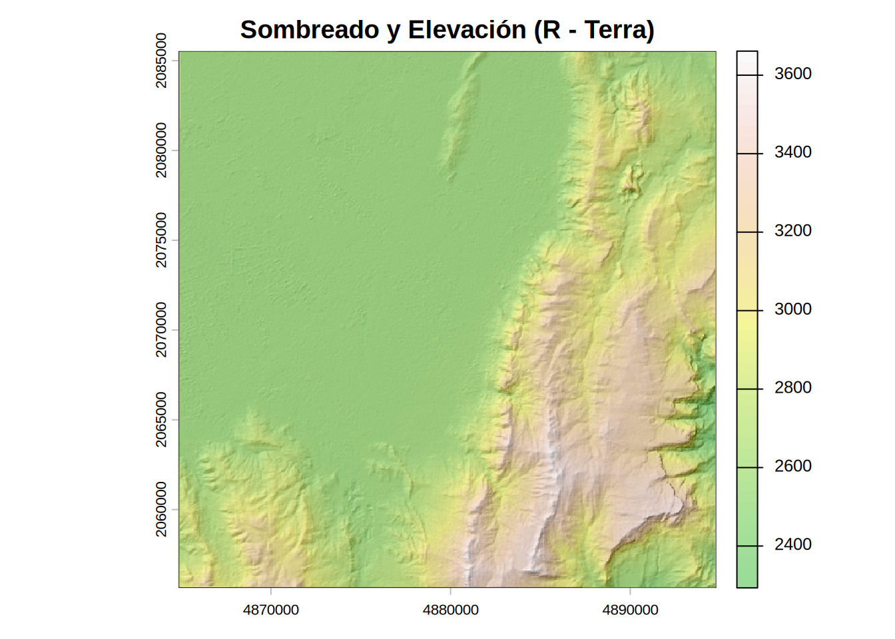
| Operación | Python 🐍 | R 🔵 | Julia 🟣 |
|---|---|---|---|
| Carga de archivo a memoria | rasterio.open() |
rast() |
Raster() |
| Reproyección Ráster | gdal.Warp(..., dstSRS="EPSG:9377") |
project(mde, "EPSG:9377") |
resample(mde, crs=EPSG(9377)) |
| Pendiente | gdal.DEMProcessing(..., "slope") |
terrain(mde, v="slope") |
ArchGDAL.gdaldem(..., "slope") |
| Orientación | gdal.DEMProcessing(..., "aspect") |
terrain(mde, v="aspect") |
ArchGDAL.gdaldem(..., "aspect") |
| Sombreado | gdal.DEMProcessing(..., "hillshade") |
shade(slope, aspect) |
ArchGDAL.gdaldem(..., "hillshade") |
| Apilamiento Visual | show(..., alpha=0.4) |
plot(..., add=TRUE, alpha=0.4) |
plot!(..., alpha=0.45) |
| Operación | Python 🐍 | R 🔵 | Julia 🟣 |
|---|---|---|---|
| Manejo de Archivos y Entorno | |||
| Validar existencia de archivo | os.path.exists(ruta) |
file.exists(ruta) |
isfile(ruta) |
| Crear directorios anidados | os.makedirs(ruta, exist_ok=True) |
dir.create(ruta, recursive=TRUE) |
mkpath(ruta) |
| Cargar archivo ráster | rioxarray.open_rasterio(ruta) |
rast(ruta) |
Raster(ruta) ArchGDAL.read(ruta) |
| Exportar / Escribir en disco | raster.rio.to_raster(ruta) dst.write(arr, 1) |
writeRaster(raster, overwrite=TRUE) |
write(ruta, raster; force=true) |
| Inicialización y Descarga (Nube/API) | |||
| Autenticación GEE | ee.Authenticate() |
ee_Initialize() |
ee.Authenticate() |
| Inicialización GEE | ee.Initialize(project="id") |
ee_Initialize(project="id") |
ee.Initialize(project="id") |
| URL de Descarga (REST) | img.getDownloadURL() |
img$getDownloadURL() |
img.getDownloadURL() |
| Petición HTTP (Download) | urllib.request.urlretrieve() |
download.file() |
Downloads.download() |
| Descompresión ZIP | zipfile.ZipFile().extractall() |
unzip() |
ZipFile.Reader() |
| Transformaciones Espaciales | |||
| Consultar CRS | raster.rio.crs |
crs(raster) |
crs(raster) |
| Reproyección espacial | raster.rio.reproject("EPSG:9377") gdal.Warp(..., dstSRS="EPSG:9377") |
project(raster, "epsg:9377") |
resample(raster; crs=EPSG(9377)) |
| Extracción de metadatos (Perfil) | src.profile / src.window_transform() |
Nativo en el objeto SpatRaster |
dims(raster_view, (X, Y)) |
| Recortes y Dimensiones | |||
| Consultar tamaño / dimensiones | raster.rio.width / .height |
dim(raster) |
size(raster) / dims(raster) |
| Definir extensión (Bounding Box) | Variables minx, miny, maxx, maxy Window(col, row, w, h) |
ext(xmin, xmax, ymin, ymax) |
Predicados Between(min, max) Índices: xoff, yoff, xcols, yrows |
| Recorte espacial (Crop/Clip) | raster.rio.clip_box(minx, miny, maxx, maxy) src.read(banda, window=v) |
crop(raster, extension) |
raster[X(Between()), Y(Between())] ArchGDAL.read(ds, banda, x, y, w, h) |
| Álgebra de Mapas y Topografía | |||
| Álgebra condicional (ej. NDWI) | np.where(cond, true, false) |
ifel(cond, true, false) |
ifelse.(cond, true, false) |
| Pendiente | gdal.DEMProcessing(..., "slope") |
terrain(mde, v="slope") |
ArchGDAL.gdaldem(..., "slope") |
| Orientación | gdal.DEMProcessing(..., "aspect") |
terrain(mde, v="aspect") |
ArchGDAL.gdaldem(..., "aspect") |
| Sombreado | gdal.DEMProcessing(..., "hillshade") |
shade(slope, aspect) |
ArchGDAL.gdaldem(..., "hillshade") |
| Visualización Cartográfica | |||
| Visualización de matriz cruda | plt.imshow(arr) |
image(..., t(arr)) |
heatmap(arr') |
| Visualización con coordenadas | xarray.plot() |
plot(rast) |
plot(rast) |
| Apilamiento Visual (Capas) | show(..., alpha=0.4) |
plot(..., add=TRUE, alpha=0.4) |
plot!(..., alpha=0.45) |
La siguiente matriz comparativa condensa la sintaxis algorítmica empleada para operaciones de geoprocesamiento nativo raster en los tres lenguajes (REVISAR PARA INTEGRAR CON LA ANTERIOR TABLA).
| Operación | Python (rioxarray) 🐍 |
R (terra) 🔵 |
Julia (Rasters.jl) 🟣 |
|---|---|---|---|
| Reproyección CRS | r.rio.reproject("EPSG:9377") |
project(r, "epsg:9377") |
resample(r; crs=EPSG(9377)) |
| Álgebra de mapas | Vectorizado directo (Ej. (b1-b2) / (b1+b2)) |
Directo sobre SpatRaster |
Vectorizado con macro broadcast (@.) |
| Extracción banda | r[indice] |
r[[indice]] |
r[Band(indice)] |
| Recorte espacial | r.rio.clip_box(minX, minY, maxX, maxY) |
crop(r, ext(xmin, xmax, ymin, ymax)) |
r[X(Between(x1, x2)), Y(Between(y1, y2))] |
| Escritura en disco | r.rio.to_raster("salida.tif") |
writeRaster(r, "salida.tif") |
write("salida.tif", r) |
La manipulación matricial constituye el núcleo del geoprocesamiento continuo y la teledetección aplicada. La ejecución de flujos de trabajo que integran la computación en la nube (Google Earth Engine) con el procesamiento local permite gestionar volúmenes de datos masivos sin comprometer la capacidad de almacenamiento de la infraestructura del usuario. El rigor en la reproyección estricta bajo el sistema MAGNA-SIRGAS Origen Nacional (EPSG:9377) garantiza que los derivados analíticos, como el NDWI o los modelos de sombreado, mantengan una métrica coherente y sean plenamente interoperables con la cartografía oficial del IGAC.
Usted debe construir un flujo de trabajo computacional en Python o R que cumpla con los siguientes requerimientos técnicos, utilizando los servicios de Google Earth Engine para la adquisición de datos en el área del Volcán Nevado del Ruiz (Cráter Arenas):
1. Adquisición y Estandarización:
USGS/SRTMGL1_003) para un área de 15x15 km centrada en las coordenadas -75.319, 4.892.2. Geoprocesamiento Local:
3. Visualización:
terrain para el MDE o Greys para el sombreado).El objetivo de esta evaluación no es solo que el código funcione, sino que seas capaz de documentar y explicar tus decisiones de arquitectura de software y el comportamiento del motor de ejecución subyacente.
1. Archivos de Código: Debes desarrollar los algoritmos en al menos uno de los siguientes formatos de archivo:
.py, .R, .jl).ipynb).qmd con chunks de código)2. Documento Analítico (Quarto): Independientemente del formato de tu código fuente, debes redactar un documento en Quarto (.qmd) y renderizarlo tanto en HTML como en PDF. En este documento debes incluir tus bloques de código y responder argumentativamente a las siguientes preguntas:
for que iteren fila por fila y columna por columna sobre toda la escena del Nevado del Ruiz.rioxarray) y R (terra), describa el concepto técnico que permite extraer matemáticamente recortes espaciales a partir de archivos ráster masivos sin cargar la totalidad del archivo en la memoria RAM (Gestión de punteros y buffers).3. Repositorio en GitHub: Sube tu carpeta del proyecto (que debe contener tus scripts, el archivo .qmd y los renders finales en HTML y PDF) a un repositorio público o privado en tu cuenta personal de GitHub.